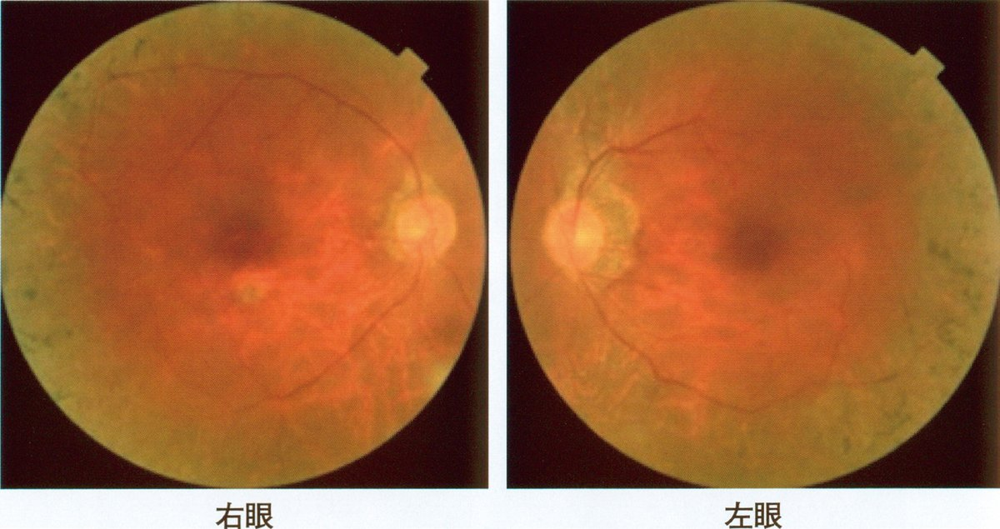
| 選択肢 | 解説 |
|---|---|
| ａ 色覚検査 | 網膜色素変性でも進行期には青黄色覚異常を生じうるが、初期から一貫して現れる所見ではなく診断の決め手にならない。色覚検査が主役になるのは先天色覚異常と錐体ジストロフィ・視神経疾患（後天赤緑異常）である。 |
| ◯ ｂ 視野検査 | 網膜色素変性は中間周辺部の杆体から脱落するので、視野は輪状暗点 → 求心性視野狭窄という決まった順で欠けていく——本例は視力（中心視野）が0.9〜1.0とほぼ保たれており、「視力が良いのに周辺が見えていない」ことを可視化できるのは視野検査だけ。進行度の評価・身体障害者手帳の判定にも用いる。 |
| ｃ 調節検査 | 調節検査は老視・調節麻痺・調節痙攣など水晶体と毛様体筋の働きをみる検査である。夜盲の原因である視細胞の機能とは無関係で、52歳なら生理的な老視があって当たり前である。 |
| ｄ 両眼視機能検査 | 両眼視機能検査（Titmus stereo test、Worth4灯試験など）は斜視・弱視で両眼の像が融像できているかをみる検査。網膜そのものの機能を測る検査ではない。 |
| ◯ ｅ 網膜電図検査〈ERG〉 | ERGは光刺激に対する網膜の電気的応答を記録する検査で、網膜色素変性では病初期から著明に減弱し、進行すると消失（消失型ERG）する——眼底所見がまだ乏しい時期でも異常が出るため確定診断に最も有用。杆体優位の障害なので暗順応下のロッドERG（b波）が先に落ちる。 |
| 夜盲をきたす病態 | 決め手 |
|---|---|
| 網膜色素変性 | 骨小体様色素沈着・血管狭細・乳頭蒼白／ERG減弱〜消失／進行性 |
| ビタミンA欠乏症 | Bitot斑・角結膜乾燥症／吸収不良症候群・胃切除後・偏食／ビタミンA投与で可逆 |
| 小口病 | 眼底が金箔様に輝き、長時間の暗順応で正常色に戻る（水尾-中村現象）／非進行性 |
| 先天停在性夜盲 | 眼底ほぼ正常・非進行性／ERGはb波のみ減弱（陰性型ERG） |
| 広汎な汎網膜光凝固後 | 治療歴がある（周辺網膜を焼いた代償） |
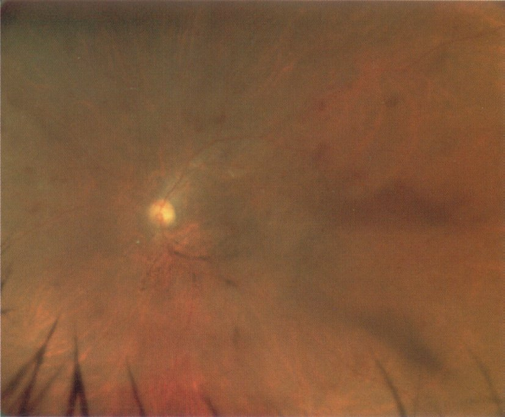
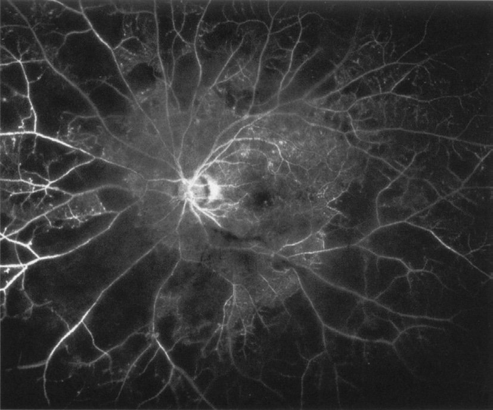
| 病期 | 眼底所見 | 治療 |
|---|---|---|
| 単純（非増殖） | 毛細血管瘤・点状/しみ状出血・硬性白斑 | 血糖コントロール＋経過観察 |
| 増殖前 | 軟性白斑・静脈数珠状拡張・網膜内細小血管異常〈IRMA〉 FAで無灌流領域 | 網膜光凝固 |
| 増殖 | 新生血管・硝子体出血・増殖膜・牽引性網膜剝離 | 汎網膜光凝固／硝子体手術 |
| 選択肢 | 解説 |
|---|---|
| ａ 白内障手術 | 前眼部に異常はなく、右眼が見えない理由は中間透光体（硝子体出血）と網膜にある。白内障があったとしても、増殖網膜症を放置したまま水晶体だけ取れば術後に炎症で網膜症が急激に悪化する（血液眼関門の破綻）。 |
| ◯ ｂ 汎網膜光凝固 | 左眼のFA（B）は広範な無灌流領域と乳頭部の新生血管からの強い蛍光漏出を示しており、増殖糖尿病網膜症である——虚血に陥った網膜が出すVEGFを止めるには虚血網膜そのものを凝固して酸素需要を減らす（汎網膜光凝固〈PRP〉）のが原則。右眼はすでに硝子体出血で失明寸前——残された左眼を同じ道筋から救うことが最優先である。 |
| ◯ ｃ 血糖コントロール | HbA1c 11.4％・血糖255mg/dL・尿糖4＋＝20年放置された未治療の糖尿病が病態のすべての源である——血糖を是正しなければ網膜症も腎症（尿蛋白2＋・Cr 1.3）も進み続ける。ただし急激に下げると一過性に網膜症が悪化することがあり（early worsening）、増殖網膜症があるときは網膜光凝固を先行・並行させながら緩やかに下げる。 |
| ｄ ステロイドパルス療法 | 大量のステロイドは血糖を確実に上昇させる——この患者に最もしてはならない治療のひとつである。適応となるのはVogt-小柳-原田病・視神経炎・甲状腺眼症など免疫性の病態であり、本例の所見とは合わない。 |
| ｅ 副腎皮質ステロイド点眼 | 点眼ステロイドは前眼部の炎症（ぶどう膜炎・術後炎症）に使う。本例は前眼部に異常が無く、ステロイド緑内障・易感染性という不利益だけが残る。 |
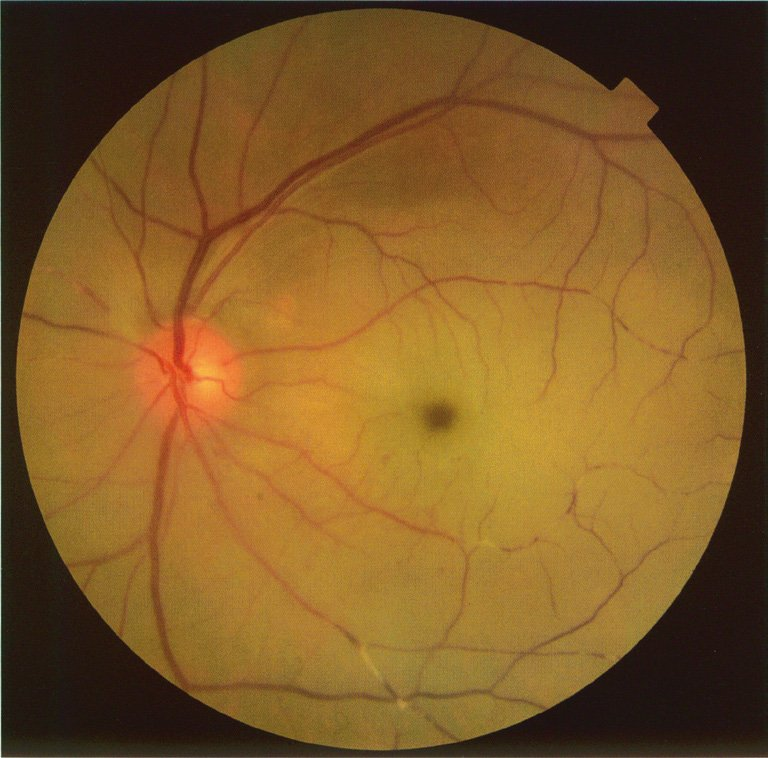
| 選択肢 | 解説 |
|---|---|
| ａ 硝子体出血 | 硝子体出血なら眼底が赤黒く濁って透見できない——眼底写真がこれほど鮮明に写ることはない。原因は増殖糖尿病網膜症・網膜裂孔・網膜静脈閉塞症などで、飛蚊症の急増が前触れになる。 |
| ｂ 加齢黄斑変性 | 加齢黄斑変性は黄斑に限局した病変で、変視症・中心暗点が主症状。滲出型で出血すれば急な低下もあるが、眼底の変化は黄斑部だけで、本例のような後極全体の乳白色混濁にはならない。 |
| ｃ Vogt-小柳-原田病 | 原田病は両眼性の肉芽腫性汎ぶどう膜炎で、漿液性網膜剝離・夕焼け状眼底・髄膜刺激症状・耳鳴・白髪・脱毛・白斑を伴う。数日〜週の経過で両眼が霧視するのが典型で、片眼が一瞬で真っ暗になる本例とは経過が違う。 |
| ｄ 網膜静脈分枝閉塞症 | 静脈分枝閉塞では閉塞した分枝の支配領域だけに火焔状出血が扇状に広がり、水平縫線を越えない。視力低下は黄斑浮腫が起きたときで、「突然真っ暗」ではなく「歪む・かすむ」という訴えになる。 |
| ◯ ｅ 網膜中心動脈閉塞症 | 眼底は後極の網膜が乳白色に混濁し、中心窩だけが下の脈絡膜の赤を透かして赤く見える（cherry red spot）——動脈は細く、これが網膜中心動脈閉塞症〈CRAO〉の像である。「テレビを見ていたら急に見えなくなった」という無痛性・突発・完全の視力消失、高血圧と50年の喫煙という塞栓の土壌もそろっている。 |
| CRAO | CRVO | |
|---|---|---|
| 発症 | 突然・数秒で完成 | 数日かけて霧視 |
| 眼底 | 網膜の乳白色混濁＋cherry red spot・動脈狭細 | 火焔状出血が全象限に散布・静脈の怒張蛇行・乳頭腫脹 |
| 瞳孔 | RAPD陽性（強い） | 虚血型でRAPD陽性 |
| 合併症 | 網膜萎縮・視神経萎縮 | 血管新生緑内障（発症3か月前後＝100日緑内障） |
| 白色瞳孔をきたす疾患 | 特徴 |
|---|---|
| 網膜芽細胞腫 | 最重要。1〜2歳・白色瞳孔と斜視・CTで石灰化・両眼性は遺伝性 |
| 先天白内障 | 水晶体の混濁。風疹・ガラクトース血症・早期手術と弱視治療が必要 |
| 第一次硝子体過形成遺残〈PHPV/PFV〉 | 片眼性・小眼球・水晶体後方の白色線維血管組織 |
| Coats病 | 男児・片眼性・網膜血管の異常拡張と大量の滲出 |
| 未熟児網膜症 | 低出生体重・酸素投与歴・牽引性網膜剝離 |
| 眼内炎・トキソカラ症 | 犬猫との接触歴・硝子体混濁 |
| 選択肢 | 解説 |
|---|---|
| ◯ ａ 先天白内障 | 水晶体そのものが白く濁るので、瞳孔を通して白い水晶体が直接見える＝白色瞳孔になる——白色瞳孔の二大原因のひとつである。片眼性なら形態覚遮断弱視を防ぐため生後早期（片眼は生後6週〜3か月）に手術する。原因は先天風疹症候群・ガラクトース血症・Lowe症候群・染色体異常など。 |
| ｂ 先天緑内障 | 先天緑内障（牛眼）は眼圧上昇で眼球全体が大きくなり、角膜が拡大・浮腫で「すりガラス様」に白く濁る——白いのは瞳孔の中ではなく角膜そのもので、流涙・羞明・眼瞼痙攣の三徴を伴う。「見え方に不自由なさそう」という本例の経過とも合わない。 |
| ｃ 瞳孔膜遺残 | 胎生期の瞳孔膜（水晶体前面を覆う血管膜）が残ったもので、虹彩の小輪から出る細い糸状の索として見える。ふつうは無症状の偶発所見で、瞳孔全体が白く光るような見え方はしない。 |
| ｄ 先天角膜混濁 | Peters異常・強膜化角膜・先天緑内障・分娩時の角膜損傷などで角膜が白濁する。やはり白いのは角膜（黒目の表面）であって、「瞳孔内が白い」という訴えとは部位が違う。 |
| ◯ ｅ 網膜芽細胞腫 | 網膜から発生する小児で最も多い眼内悪性腫瘍で、白い腫瘍塊が瞳孔から透けて見える（白色瞳孔／猫眼 cat's eye）——2歳という年齢・片眼性・視力に不自由がなさそうでも見逃せない点で必ず鑑別に挙げるべき疾患である。診断が遅れれば生命予後に直結する。 |
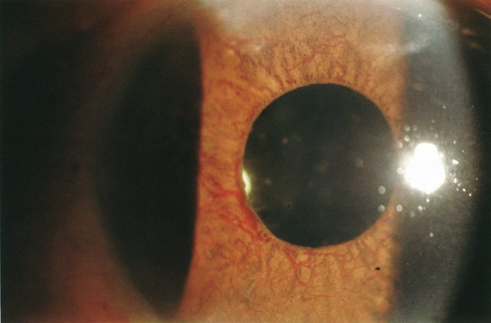
| 選択肢 | 解説 |
|---|---|
| ａ 加齢黄斑変性 | 加齢黄斑変性の新生血管は脈絡膜から網膜下へ伸びるもので、前眼部（虹彩・隅角）には及ばない。眼圧が上がることもない。 |
| ◯ ｂ 糖尿病網膜症 | 増殖糖尿病網膜症では広範な網膜無灌流からVEGFが前房水中へ拡散し、虹彩と隅角に新生血管（虹彩ルベオーシス）を生やす——写真の虹彩表面に走る細かい血管がそれで、隅角が新生血管膜で塞がれた結果が眼圧35mmHg＝血管新生緑内障である。血管新生緑内障の原因の第1位。 |
| ◯ ｃ 内頸動脈狭窄症 | 内頸動脈が高度に狭窄すると眼動脈以下の血流が慢性的に減り、眼虚血症候群〈ocular ischemic syndrome〉を起こす——網膜全体が慢性虚血に陥ってVEGFを出し、虹彩ルベオーシス・血管新生緑内障に至る。高齢・動脈硬化の患者で片眼だけルベオーシスを見たら必ず頸動脈を疑う。 |
| ｄ 網膜色素変性症 | 視細胞の変性疾患で血管新生を起こさない——眼圧も正常である。夜盲・輪状暗点・骨小体様色素沈着が本態で、前眼部は原則として正常。 |
| ｅ 裂孔原性網膜剝離 | 裂孔から房水が網膜下へ逃げるためむしろ眼圧は低下するのがふつう。長期に放置された増殖硝子体網膜症ではルベオーシスを生じることもあるが、典型的な組合せではない。 |
| 緊急度 | 疾患 | 初期対応 |
|---|---|---|
| 分単位 | 化学外傷（とくにアルカリ） | 直ちに大量洗眼（問診より洗浄が先） |
| 分〜時間 | 網膜中心動脈閉塞症 | 眼球マッサージ・前房穿刺・眼圧下降 |
| 時間単位 | 急性閉塞隅角緑内障発作 | 高浸透圧薬点滴・炭酸脱水酵素阻害薬・縮瞳薬 （散瞳薬は禁忌）→ レーザー虹彩切開/水晶体摘出 |
| 時間単位 | 眼球穿孔外傷・眼内炎 | 眼球を圧迫せず保護カップ＋抗菌薬全身投与・緊急手術 |
| 日単位 | 裂孔原性網膜剝離 | 黄斑に及ぶ前に手術（黄斑剝離前なら視力予後良好） |
| 日単位 | 眼窩蜂巣炎 | 抗菌薬全身投与・入院・副鼻腔の検索 |
| 選択肢 | 解説 |
|---|---|
| ａ 眼窩蜂巣炎 ――― 炭酸脱水酵素阻害薬の内服 | 眼窩蜂巣炎は副鼻腔炎からの波及が最多の細菌感染症で、初期対応は抗菌薬の全身投与（点滴）である。眼球突出・眼球運動障害・発熱を伴い、海綿静脈洞血栓症・髄膜炎・視神経障害へ進む危険がある。炭酸脱水酵素阻害薬は房水産生を抑える緑内障の薬。 |
| ｂ 急性涙囊炎 ――― アトロピン点眼 | 急性涙囊炎は鼻涙管閉塞に細菌感染が加わったもので、内眼角部の発赤・腫脹・圧痛と排膿をみる——初期対応は抗菌薬投与と切開排膿、落ち着いてから涙囊鼻腔吻合術を行う。アトロピンは散瞳・調節麻痺薬で無関係。 |
| ｃ 急性ぶどう膜炎 ――― ピロカルピン点眼 | 急性前部ぶどう膜炎（虹彩毛様体炎）の治療は副腎皮質ステロイド点眼＋散瞳薬（トロピカミド・アトロピン）——散瞳させて虹彩を動かすことで虹彩後癒着を防ぐのが目的である。ピロカルピンは縮瞳薬で、瞳孔縁を水晶体に押し付けて後癒着を助長する＝逆効果。 |
| ｄ 裂孔原性網膜剝離 ――― 副腎皮質ステロイド点眼 | 裂孔原性網膜剝離は網膜に開いた穴から液化硝子体が入り込む力学的な病態で、炎症の病気ではない——治療は手術（強膜内陥術・硝子体手術）のみ。黄斑に及ぶ前に手術できるかが視力予後を決める。 |
| ◯ ｅ 網膜中心動脈閉塞症 ――― 眼球マッサージ | 正しい組合せ。CRAOでは眼球を間欠的に圧迫・解除して眼圧を変動させ、塞栓を末梢へ押し流すことを狙う——前房穿刺・炭酸脱水酵素阻害薬・高浸透圧薬による眼圧下降も同じ狙いで、その場で誰でも始められる処置という点で「初期対応」として問われる。網膜は完全虚血90分で不可逆——一刻を争う。 |
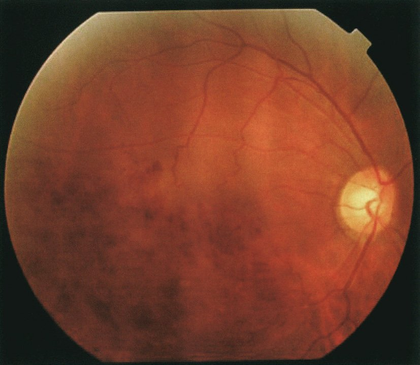
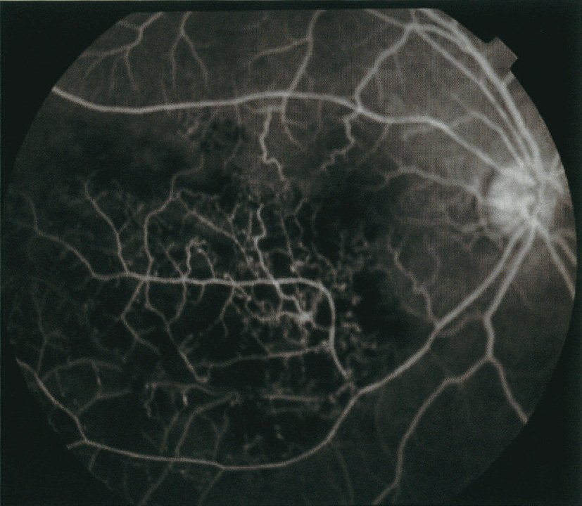
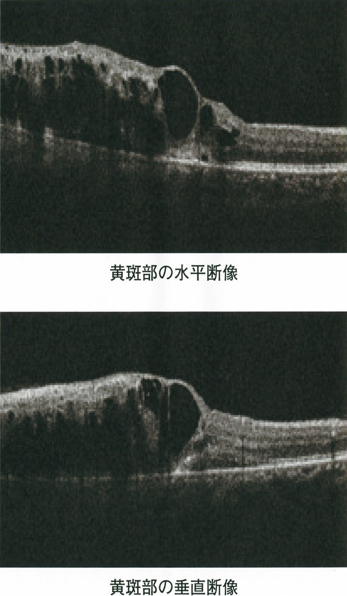
| 選択肢 | 解説 |
|---|---|
| ａ 強膜内陥術 | 強膜内陥術（バックリング）は裂孔原性網膜剝離に対して強膜を外から凹ませ、網膜裂孔を網膜色素上皮へ押し当てて閉じる手術である。本例の眼底に網膜剝離も裂孔も無い。 |
| ｂ 硝子体手術 | 硝子体手術は吸収しない硝子体出血・牽引性網膜剝離・黄斑上膜・黄斑円孔などに行う。静脈閉塞後の黄斑浮腫にも選択肢としてはあるが、侵襲が大きく「まず行うべき治療」ではない。 |
| ｃ 光線力学的療法 | 光線力学的療法〈PDT〉はベルテポルフィリンを静注してから弱いレーザーを当て、脈絡膜新生血管を選択的に閉塞させる治療である——適応はポリープ状脈絡膜血管症を含む加齢黄斑変性で、網膜血管の閉塞には用いない。 |
| ◯ ｄ 抗VEGF薬硝子体注射 | 眼底（A）は出血が水平縫線を越えず下半分に限局し、FA（B）でも同じ領域に無灌流と漏出がある——下耳側の網膜静脈分枝閉塞症〈BRVO〉である。OCT（C）は黄斑に嚢胞様の低反射腔＝黄斑浮腫を示し、これが視力0.3の原因——静脈閉塞後の黄斑浮腫はVEGF依存性なので抗VEGF薬硝子体注射が第一選択である。 |
| ｅ 副腎皮質ステロイド内服 | 黄斑浮腫にステロイドのテノン囊下注射・硝子体内インプラントを使うことはあるが、内服（全身投与）は効果が乏しく副作用ばかり大きい。抗VEGF薬が使えない場合の次善策という位置付けである。 |
| 適応 | 狙い |
|---|---|
| 網膜静脈閉塞症の黄斑浮腫 | 浮腫の吸収（本問） |
| 糖尿病黄斑浮腫 | 浮腫の吸収 |
| 滲出型加齢黄斑変性 | 脈絡膜新生血管の退縮 |
| 血管新生緑内障 | 虹彩・隅角新生血管の退縮（手術までのつなぎ） |
| 未熟児網膜症 | 網膜新生血管の退縮 |
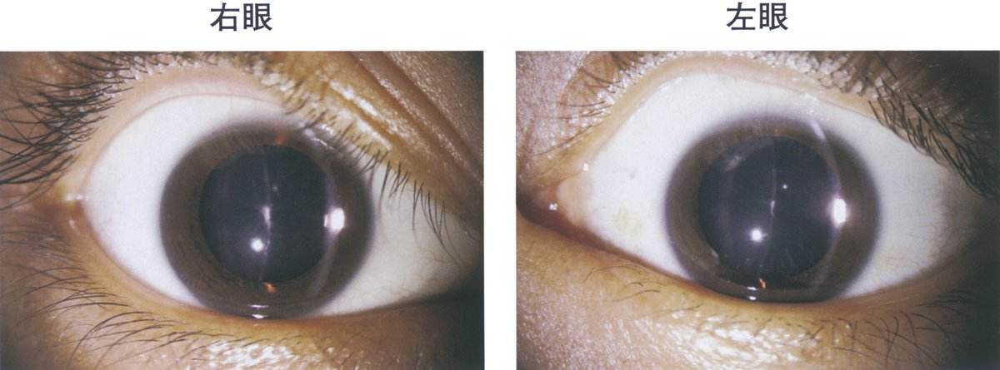
| 合併症 | 成り立ち | 緊急性 |
|---|---|---|
| アトピー性白内障 | 前囊下の星芒状混濁が特徴（ステロイド白内障は後囊下） 20〜30代の若さで進行し両眼性 | 待機的手術 |
| 網膜裂孔・網膜剝離 | 叩打の衝撃で硝子体基底部が網膜を引き裂く 若年でも起こる／両眼性・多発性・鋸状縁断裂が多い | 緊急 |
| 円錐角膜 | こすることで角膜が菲薄化・突出 | 準緊急（急性水腫時） |
| アトピー性角結膜炎／春季カタル | Ⅰ型＋Ⅳ型アレルギー・巨大乳頭・シールド潰瘍 | 非緊急 |
| 眼瞼炎・単純ヘルペス（Kaposi水痘様発疹症） | 皮膚バリアの破綻 | 感染時は準緊急 |
| 選択肢 | 解説 |
|---|---|
| ａ 結膜炎 | アトピー性角結膜炎は本例の瘙痒感の原因そのものだが、慢性の経過をとる疾患で「緊急」ではない。重症型の春季カタルでは巨大乳頭・シールド潰瘍を作るが、それでも緊急手術の対象ではない。 |
| ｂ 白内障 | 写真が示すとおり本例にはアトピー性白内障（前囊下・後囊下の混濁）があり、「昼盲」（明るいところで縮瞳すると混濁部を通る光が増えて見えにくい）と視力0.1の主因である——しかし白内障手術は待機的手術であって緊急を要さない。 |
| ｃ 円錐角膜 | アトピー患者が眼をこすり続けることで角膜が薄く円錐状に突出する合併症で、不正乱視による視力低下をきたす。進行例では角膜移植・クロスリンキングを行うが、急性水腫を起こさないかぎり緊急ではない。 |
| ◯ ｄ 網膜裂孔 | 「眼部を叩打してきた」＝繰り返す鈍的外力と、「前部硝子体の色素散布（tobacco dust／Shafer徴候）」がそろっている——硝子体中の色素顆粒は網膜色素上皮が裂孔から硝子体腔へこぼれ出た証拠であり、網膜裂孔が存在することをほぼ確定させる。放置すれば数日で裂孔原性網膜剝離へ進むので、直ちに散瞳して眼底周辺部を精査し、レーザー光凝固で裂孔を囲む必要がある。 |
| ｅ 後部硝子体剝離 | 加齢や強度近視で硝子体が網膜から離れる生理的な現象で、飛蚊症・光視症の最多の原因である——それ自体は治療不要で、問題になるのは「その際に網膜が引き裂かれて裂孔ができたとき」である。 |
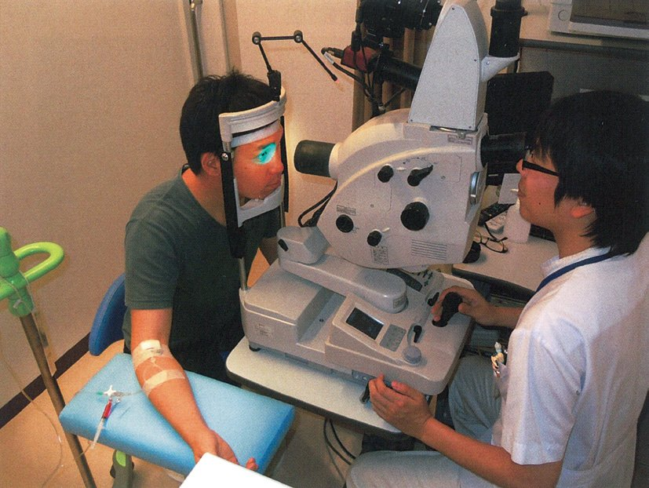
| FAの所見 | 意味 | 代表疾患 |
|---|---|---|
| 無灌流領域（低蛍光） | 毛細血管の閉塞 | 糖尿病網膜症・網膜静脈閉塞症 |
| 蛍光漏出（過蛍光） | 血管透過性亢進・新生血管 | 黄斑浮腫・新生血管・ぶどう膜炎 |
| 組織染／貯留 | 色素が組織や腔に溜まる | 嚢胞様黄斑浮腫（花弁状）・中心性漿液性脈絡網膜症 |
| ブロック（低蛍光） | 出血・色素が蛍光を遮る | 網膜出血 |
| 選択肢 | 解説 |
|---|---|
| ａ 網膜血管腫 | 網膜血管腫はvon Hippel-Lindau病に伴う血管性腫瘍で、FAでは拡張した流入動脈と流出静脈を伴う球状の過蛍光として写る。小脳血管芽腫・腎細胞癌・褐色細胞腫を合併する常染色体顕性遺伝の疾患で、糖尿病とは無関係。 |
| ◯ ｂ 網膜無灌流領域 | 写真は肘に静脈路を確保して眼底カメラの前に座っている＝蛍光眼底造影〈FA〉の場面である。10年放置された糖尿病（HbA1c 8.5%）で両眼に網膜出血と白斑——FAで最も期待される所見は毛細血管が閉塞して蛍光色素が入ってこない暗い領域＝無灌流領域である。この範囲の広さが汎網膜光凝固に踏み切るかどうかを決める。 |
| ｃ 視神経乳頭浮腫 | うっ血乳頭は頭蓋内圧亢進で生じる両眼性の乳頭腫脹で、視力は保たれ、盲点が拡大する。頭痛・嘔吐など頭蓋内圧亢進症状を伴うのが常で、本例には該当しない。 |
| ｄ 脈絡膜新生血管 | 脈絡膜新生血管〈CNV〉は加齢黄斑変性・強度近視・血管線条症などでBruch膜を破って網膜下に伸びる血管である——糖尿病網膜症で生じるのは網膜（内層）由来の新生血管で、層が違う。 |
| ｅ 桜実紅斑〈cherry red spot〉 | cherry red spotは網膜中心動脈閉塞症やTay-Sachs病などのスフィンゴリピドーシスで、網膜内層が白濁して中心窩だけ赤く透ける所見。突然の高度視力低下を伴うもので、3か月かけて進行した本例とは経過が合わない。 |
| 検査 | 見えるもの | 主な適応 |
|---|---|---|
| フルオレセイン蛍光造影〈FA〉 | 網膜血管（色素は血漿蛋白との結合が弱く漏れやすい） | 糖尿病網膜症・静脈閉塞症・黄斑浮腫 |
| インドシアニングリーン造影〈ICGA〉 | 脈絡膜血管（蛋白結合率が高く漏れにくい／近赤外光なので網膜色素上皮や出血を透過する） | 加齢黄斑変性（とくにポリープ状脈絡膜血管症）・原田病 |
| OCTアンギオグラフィ〈OCTA〉 | 造影剤なしで血流を層別に描出 | 無灌流域・新生血管のフォロー（侵襲がなく反復可能） |
| 病期 | 起きていること | 眼底所見 |
|---|---|---|
| 単純 （非増殖） | 周皮細胞脱落で壁が弱る・漏れる | 毛細血管瘤・点状/しみ状出血・硬性白斑（漏れた脂質・蛋白の沈着） |
| 増殖前 | 毛細血管が詰まる（虚血） | 軟性白斑・静脈の数珠状拡張・網膜内細小血管異常〈IRMA〉／FAで無灌流領域 |
| 増殖 | VEGFで新生血管が生える | 新生血管（NVD/NVE）・硝子体出血・増殖膜・牽引性網膜剝離・血管新生緑内障 |
| 選択肢 | 解説 |
|---|---|
| ａ 軟性白斑 | 軟性白斑（綿花様白斑）は神経線維層の微小梗塞——毛細血管が閉塞し、軸索輸送が止まって腫れた神経線維の像である。つまり虚血が始まった証拠で、増殖前網膜症のサインである（初期には出ない）。 |
| ◯ ｂ 網膜出血 | 脆くなった毛細血管から点状・しみ状出血が起こる——毛細血管瘤と並んで単純（非増殖）網膜症の基本所見である。網膜の深層（内顆粒層〜外網状層）で起こるため点状・斑状（dot and blot）の形になる——神経線維層に沿って広がる火焔状出血は高血圧網膜症や静脈閉塞症に多い。 |
| ｃ 硝子体出血 | 硝子体出血は新生血管が破れて起こる＝増殖網膜症の所見である。急激な視力低下・飛蚊症で発症し、眼底が透見不能になる。 |
| ◯ ｄ 毛細血管瘤 | 糖尿病網膜症の最初に現れる眼底所見——高血糖で周皮細胞（ペリサイト）が脱落して血管壁が弱くなり、局所的に膨らんだ小さな瘤ができる。検眼鏡では点状出血と見分けにくいが、FAでは点状の過蛍光として明瞭に写る。 |
| ｅ 網膜新生血管 | 無灌流領域から出たVEGFに応じて生えるもので、定義上これがあれば増殖網膜症である。乳頭上〈NVD〉と網膜上〈NVE〉があり、硝子体出血・牽引性網膜剝離・血管新生緑内障の元になる。 |
| 硬性白斑 | 軟性白斑（綿花様白斑） | |
|---|---|---|
| 正体 | 血漿から漏れた脂質・蛋白の沈着 | 神経線維層の微小梗塞（軸索輸送の停滞） |
| 見え方 | 境界明瞭・黄白色・光沢あり 黄斑周囲に環状（星芒状）に並ぶ | 境界不明瞭・白くふわっと綿のよう |
| 意味 | 漏れ（血液網膜関門の破綻） | 虚血 |
| 病期／疾患 | 単純網膜症・黄斑浮腫・高血圧網膜症 | 増殖前糖尿病網膜症・高血圧緊急症・網膜静脈閉塞症・膠原病（SLE）・HIV網膜症 |
| 経過 | 数か月〜年で消退 | 数週〜数か月で消える（消えても虚血は残る） |
| 選択肢 | 解説 |
|---|---|
| ◯ ａ 新生血管 | 新生血管の存在が増殖網膜症の定義そのものである——無灌流領域から出たVEGFに応じて乳頭上〈NVD〉あるいは網膜上〈NVE〉に生える。壁が未熟で漏れやすく破れやすいため、硝子体出血・増殖膜・牽引性網膜剝離の元凶になる。 |
| ◯ ｂ 硝子体出血 | 硝子体は本来血管をもたない透明なゲル——そこに出血があるということは網膜表面の新生血管が破れたということである。後部硝子体剝離や眼球運動で新生血管が引っぱられて起こり、急な飛蚊症の増加と視力低下で発症する。 |
| ｃ 毛細血管瘤 | 周皮細胞脱落による単純（非増殖）網膜症の最初の所見で、全病期を通じてみられる。「増殖期のみ」という限定に当てはまらない。 |
| ｄ 網膜しみ状出血 | 深層の毛細血管からの出血で、単純網膜症の段階から現れ、以後どの病期にもある。増殖期に特有の所見ではない。 |
| ◯ ｅ 牽引性網膜剝離 | 新生血管に伴って生じた線維血管性の増殖膜が収縮し、網膜を硝子体側へ引き剝がす——増殖期に特有の合併症である。裂孔原性と違い網膜に穴は無く、剝離面はテント状に引きつれて可動性に乏しい。黄斑に及べば硝子体手術の適応。 |
| 型 | 成り立ち | 代表疾患 | 治療 |
|---|---|---|---|
| 裂孔原性 | 網膜に穴が開き、液化硝子体が網膜下へ回り込む | 後部硝子体剝離、強度近視、外傷、アトピー | 強膜内陥術・硝子体手術 |
| 牽引性 | 増殖膜が網膜を引っぱる（穴は無い） | 増殖糖尿病網膜症、未熟児網膜症、アトピー（外力） | 硝子体手術（膜を切除する） |
| 滲出性（漿液性） | 脈絡膜からの滲出液が網膜下に溜まる（穴も牽引も無い） | Vogt-小柳-原田病、後部強膜炎、脈絡膜腫瘍、妊娠高血圧症候群 | 原疾患の治療（ステロイドなど）——手術しない |
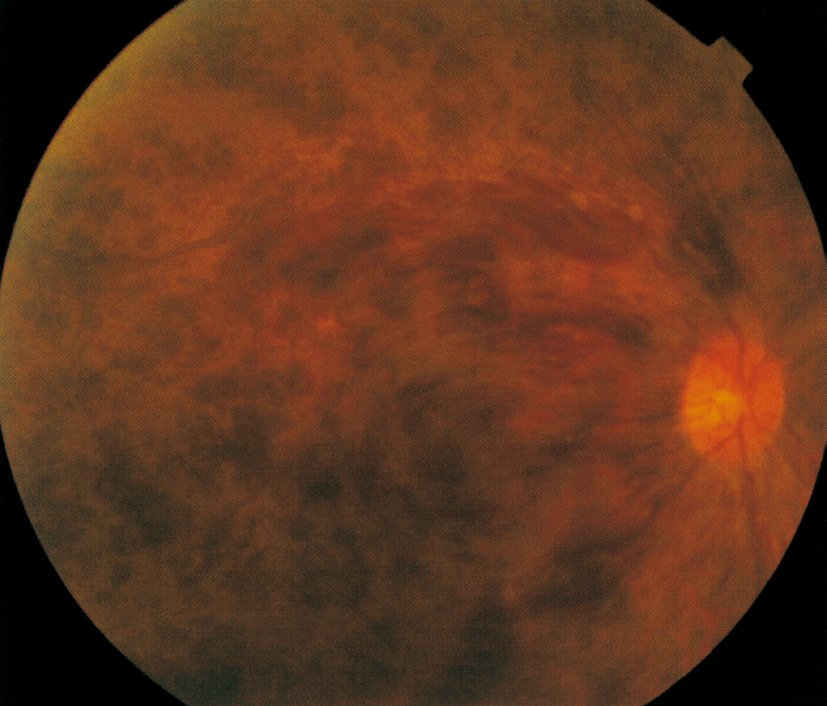
| 非虚血型（うっ血型） | 虚血型 | |
|---|---|---|
| 頻度 | 約2/3 | 約1/3 |
| 視力 | 比較的良好（0.5以上） | 高度低下（0.1以下） |
| RAPD | 陰性〜軽度 | 明らかに陽性 |
| FA | 無灌流域は少ない | 広範な無灌流域 |
| 転帰 | 自然軽快もある | 血管新生緑内障（100日緑内障）・硝子体出血 |
| 選択肢 | 解説 |
|---|---|
| ａ 兎 眼 | 兎眼は顔面神経麻痺などで眼瞼が閉じきらない状態で、眼瞼の運動の問題である。角膜が乾いて兎眼性角膜炎を起こす——網膜血管の閉塞とは無関係。 |
| ｂ 涙腺炎 | 流行性耳下腺炎・EBウイルス・IgG4関連疾患・Sjögren症候群などで起こる涙腺の炎症である。眼底の血管閉塞から涙腺へ波及することはない。 |
| ｃ 眼瞼炎 | マイボーム腺機能不全・脂漏性皮膚炎・黄色ブドウ球菌などによる眼瞼縁の炎症。本例の病態とつながらない。 |
| ｄ 角膜炎 | 感染（細菌・ヘルペス・真菌・アカントアメーバ）や乾燥（ドライアイ）で起こる角膜の炎症。重症の血管新生緑内障が長く続けば水疱性角膜症になることはあるが、「今後起こりうる合併症」として第一に挙げるものではない。 |
| ◯ ｅ 血管新生緑内障 | 眼底は4象限すべてに火焔状出血が散布し、静脈は怒張・蛇行——網膜中心静脈閉塞症〈CRVO〉である。FAで広範な無灌流（虚血型CRVO）が確認されており、この型はVEGFを大量に産生して虹彩・隅角に新生血管を生やす——発症3か月前後に起こりやすいことから「100日緑内障」と呼ばれる。正答率99%＝取りこぼしてはならない一問。 |
| 群 | 所見 | 意味 |
|---|---|---|
| 硬化性変化 | 動静脈交叉現象・動脈の口径不同・反射亢進・銅線動脈 → 銀線動脈 | 動脈硬化（年余の変化・不可逆） |
| 高血圧性変化 | 細動脈の狭細化・網膜出血（火焔状）・軟性白斑・硬性白斑（星芒状斑）・乳頭浮腫 | 血圧そのものの反映（降圧で改善しうる） |
| 選択肢 | 解説 |
|---|---|
| ａ 黄斑浮腫 | 黄斑に細胞外液が溜まった状態で、糖尿病網膜症・網膜静脈閉塞症・ぶどう膜炎・白内障術後（Irvine-Gass）など血液網膜関門が壊れる病態すべてで起こる。動脈硬化に特異的な所見ではない。 |
| ｂ 毛細血管瘤 | 糖尿病網膜症の最初の所見。周皮細胞の脱落による血管壁の局所的な膨隆である。細小血管症であって、大〜中動脈の硬化を映すものではない。 |
| ｃ 網膜新生血管 | 網膜の虚血（無灌流）に対してVEGFが生やす血管で、増殖糖尿病網膜症・網膜静脈閉塞症などでみられる。動脈硬化そのものの所見ではない。 |
| ◯ ｄ 動静脈交叉現象 | 網膜の動脈と静脈は交叉部で共通の外膜に包まれている——硬く厚くなった動脈が静脈を圧迫すると、交叉部で静脈が細くくびれ、その手前が膨れる（Gunn交叉現象）。これは動脈硬化性変化の直接の証拠であり、網膜静脈分枝閉塞症の発生部位そのものでもある。ほかに銅線動脈・銀線動脈・動脈の反射亢進・口径不同が動脈硬化の所見である。 |
| ｅ 視神経乳頭陥凹 | 乳頭陥凹の拡大は緑内障による網膜神経節細胞・視神経線維の脱落を示す所見である。C/D比0.7以上、上下のリムの菲薄化、ノッチング、乳頭出血などが手がかりになる。 |
| 選択肢 | 解説 |
|---|---|
| ａ 黄斑円孔 | 後部硝子体の接線方向の牽引で中心窩に全層の穴が開く疾患で、変視症と中心暗点をきたす。血管の閉塞は起きないので白斑は出ない。OCTで診断し、硝子体手術＋内境界膜剝離＋ガスタンポナーデで治す。 |
| ◯ ｂ 糖尿病網膜症 | 毛細血管が閉塞して神経線維層に微小梗塞が起こると軟性白斑になる——これは増殖前網膜症のサインで、網膜光凝固を考える転換点である。静脈の数珠状拡張・IRMA と並ぶ「虚血の三所見」。 |
| ｃ 網膜中心動脈閉塞症 | CRAOでは網膜内層全体が一様に乳白色に混濁し、cherry red spotを呈する——「点々とした綿花様の白斑」ではなく面としての白濁であり、所見の質が異なる。 |
| ◯ ｄ 網膜中心静脈閉塞症 | 静脈がせき止められて毛細血管の灌流圧が落ちると、神経線維層の微小梗塞＝軟性白斑が多発する——軟性白斑が多いほど虚血型を示唆し、血管新生緑内障のリスクが高い。 |
| ｅ 中心性漿液性脈絡網膜症 | 網膜色素上皮のバリアが局所的に破れ、脈絡膜から漏れた液が黄斑部の網膜下に溜まる疾患である——30〜50代の男性・ストレス・ステロイド使用が背景で、変視症・小視症・軽度の視力低下をきたす。血管閉塞ではないので白斑は出ない。多くは自然軽快する。 |
| 所見 | 正体 | 見え方 | 代表疾患 |
|---|---|---|---|
| 軟性白斑 | 神経線維層の微小梗塞 | 綿花様・境界不明瞭・血管に沿う | 増殖前糖尿病網膜症、静脈閉塞、高血圧緊急症、SLE |
| 硬性白斑 | 漏出した脂質・蛋白 | 黄白色・境界明瞭・光沢／黄斑周囲に環状 | 単純糖尿病網膜症、黄斑浮腫、高血圧網膜症 |
| 網膜の乳白色混濁 | 内層全体の虚血性浮腫 | 面として広がる＋cherry red spot | 網膜中心動脈閉塞症 |
| 網脈絡膜萎縮巣 | 組織が失われ強膜が透見 | 境界明瞭・色素縁を伴う・陥凹 | 陳旧性の炎症（トキソプラズマ）、強度近視 |
| ドルーゼン | Bruch膜上の老廃物 | 黄斑部の淡黄色の小円形斑 | 加齢黄斑変性（前駆病変） |
| 狙い | やり方 | 適応 |
|---|---|---|
| ① 癒着させる | 裂孔の周囲を囲んで焼く（バリア） | 網膜裂孔・網膜格子状変性 |
| ② 虚血網膜を減らす | 周辺網膜に1,000〜2,000発（汎網膜光凝固） | 増殖(前)糖尿病網膜症・虚血型静脈閉塞症・血管新生緑内障・未熟児網膜症 |
| ③ 漏れる点を塞ぐ | 漏出点・異常血管を直接焼く | 中心性漿液性脈絡網膜症・網膜細動脈瘤・Coats病 |
| 選択肢 | 解説 |
|---|---|
| ａ 網膜裂孔 | 裂孔の周囲をレーザーで囲んで網膜と網膜色素上皮を癒着させ、液化硝子体の侵入を堰き止める——網膜剝離への進展を防ぐ典型的な適応で、外来で数分で終わる。 |
| ◯ ｂ 網膜色素変性 | 網膜色素変性は視細胞そのものが遺伝的にアポトーシスしていく変性疾患である——レーザー光凝固は「異常な血管を潰す」「網膜を癒着させる」「虚血網膜を減らす」ための道具であって、死にゆく視細胞を救う手段ではない。むしろ残った網膜を焼けば視野をさらに削ることになる——これが本問の正解。治療は遮光眼鏡・ロービジョンケア・合併症（白内障・黄斑浮腫）への対応。 |
| ｃ 糖尿病網膜症 | 増殖前〜増殖期に汎網膜光凝固〈PRP〉を行い、虚血網膜の酸素需要を落としてVEGF産生を止める——光凝固の最大の適応であり、失明率を大きく下げた歴史的治療である。 |
| ｄ 閉塞隅角緑内障 | レーザー虹彩切開術〈LI〉で虹彩に小さな孔を開け、後房と前房のバイパスを作って瞳孔ブロックを解除する。開放隅角緑内障に対する選択的レーザー線維柱帯形成術〈SLT〉もある。 |
| ｅ 中心性漿液性網脈絡膜症 | 多くは自然軽快するためまず経過観察するが、遷延例ではFAで同定した漏出点を直接光凝固して漏れを止める。中心窩に近い漏出点には低出力の光線力学的療法〈PDT〉を選ぶ。 |
| 疾患 | なぜ効かないか | 実際の治療 |
|---|---|---|
| 網膜色素変性 | 視細胞の遺伝性アポトーシス | 遮光眼鏡・ロービジョンケア・合併症治療 |
| 萎縮型加齢黄斑変性 | 網膜色素上皮の萎縮（血管の病気ではない） | 禁煙・サプリメント（AREDS）・経過観察 |
| 緑内障（視神経萎縮そのもの） | 失われた神経は戻らない | 眼圧下降で進行を止める（SLT/LIは眼圧を下げる目的） |
| 白内障・硝子体出血 | そもそもレーザーが網膜まで届かない | 手術（PEA+IOL／硝子体手術） |
| 選択肢 | 解説 |
|---|---|
| ａ 夜 盲 | 暗いところで見えにくくなる症状で、杆体の機能低下を意味する。網膜色素変性・ビタミンA欠乏症・小口病などでみられるが、本例は訴えていない。 |
| ｂ 眼精疲労 | 近業を続けると眼痛・頭痛・肩こり・悪心をきたし、休息で軽快する状態。原因は屈折異常・老視・斜位・ドライアイ・VDT作業・心因など。本例の急性の訴えとは違う。 |
| ◯ ｃ 飛蚊症 | 「明るいところを見るともやもやと浮遊するものが見える」＝飛蚊症——硝子体の混濁が網膜に影を落とすために生じ、視線を動かすと少し遅れて動くのが特徴。生理的なものも多いが、急に数が増えたときは網膜裂孔・硝子体出血のサインである。 |
| ◯ ｄ 光視症 | 「突然、光が走るように感じた。眼を閉じても消えない」＝光視症——硝子体が網膜を機械的に引っぱると、網膜は「光」としてしか反応できないため稲妻のような光を自覚する。眼球運動で誘発され、閉眼でも消えない（外からの光ではないから）点が診断的である。 |
| ｅ 変視症 | まっすぐな線が歪んで見える症状で、黄斑（中心窩）の視細胞の配列が乱れることによる——加齢黄斑変性・中心性漿液性脈絡網膜症・黄斑上膜・黄斑円孔で生じ、Amslerチャートで検出する。 |
| 機転 | 代表疾患 |
|---|---|
| ① 新生血管が破れる | 増殖糖尿病網膜症（最多）・網膜静脈閉塞症・眼虚血症候群・未熟児網膜症 |
| ② 網膜血管が裂ける | 網膜裂孔（後部硝子体剝離に伴う）・網膜細動脈瘤の破裂 |
| ③ 外から入る | 眼外傷（鈍的・穿孔性）、Terson症候群（くも膜下出血に伴う硝子体出血） |
| ④ 網膜下から回る | 加齢黄斑変性の大出血 |
| 選択肢 | 解説 |
|---|---|
| ◯ ａ 網膜裂孔 | 後部硝子体剝離のときに網膜血管を巻き込んで裂けると、血液が直接硝子体腔へ流れ込む——「飛蚊症が急に増えた」「墨を流したように見える」という訴えの正体で、網膜裂孔・網膜剝離を強く示唆する。出血で眼底が透見できないときは超音波Bモードで網膜剝離の有無を確認する。 |
| ｂ 網膜色素変性 | 視細胞の遺伝性変性であり、血管新生も出血も起こさない。みられるのは骨小体様色素沈着・血管狭細化・乳頭蒼白で、合併症は白内障と黄斑浮腫。 |
| ｃ 虚血性視神経症 | 短後毛様動脈の循環障害による視神経乳頭の梗塞で、突然の視力低下・水平半盲・乳頭の蒼白浮腫をきたす。乳頭近傍に線状出血を伴うことはあるが、硝子体腔を満たすような出血にはならない。 |
| ◯ ｄ 網膜中心静脈閉塞症 | 虚血型CRVOでは網膜・乳頭に新生血管が生え、これが破れて硝子体出血となる——また急性期の網膜出血が内境界膜を破って硝子体腔へ及ぶこともある。硝子体出血を起こす血管閉塞としては静脈側（CRVO・BRVO）が代表で、動脈閉塞（CRAO）では出血しない点が対照的である。 |
| ｅ Vogt-小柳-原田症候群 | メラノサイトに対する自己免疫による両眼性の肉芽腫性汎ぶどう膜炎——漿液性網膜剝離・視神経乳頭発赤・髄膜刺激症状・難聴/耳鳴で発症し、回復期に夕焼け状眼底・白斑・白髪・脱毛をみる。滲出が主体で出血はしない。 |
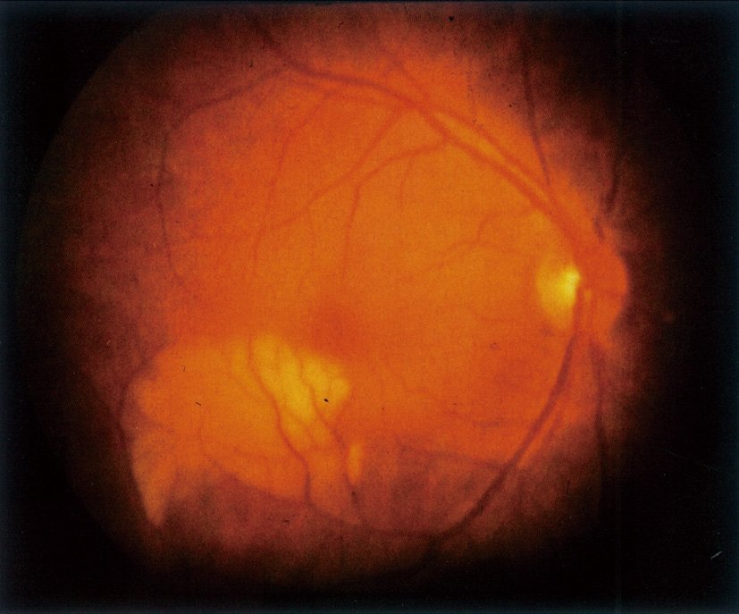
| 選択肢 | 解説 |
|---|---|
| ａ 網膜剝離 | 裂孔原性網膜剝離では飛蚊症・光視症が先行し、視野欠損はカーテンが下りるように徐々に広がる。眼底では剝離した網膜が灰白色に隆起して波打つのが見え、本例のような平坦な白濁とは異なる。 |
| ｂ 悪性リンパ腫 | 眼内リンパ腫（硝子体網膜リンパ腫）は高齢者の“治らないぶどう膜炎”として現れ、硝子体混濁と網膜下の黄白色浸潤斑を呈する。経過は亜急性〜慢性で、中枢神経原発リンパ腫の合併を検索する。 |
| ｃ 加齢黄斑変性 | 黄斑に限局する疾患で、症状は変視症・中心暗点・視力低下——視力1.0が保たれ、周辺（鼻側上方）の視野が欠ける本例とは正反対である。 |
| ◯ ｄ 網膜動脈分枝閉塞症 | 眼底では下耳側の分枝動脈の支配領域が扇状に乳白色に混濁している——網膜内層の虚血性浮腫であり、網膜動脈分枝閉塞症〈BRAO〉の像である。網膜と視野は上下・鼻耳が逆になるので、下耳側の網膜の障害 → 鼻側上方の視野欠損と一致する。黄斑（中心窩）が免れているので視力1.0が保たれる点もBRAOらしさで、突然発症という経過も合う。 |
| ｅ Vogt-小柳-原田症候群 | 両眼性の肉芽腫性汎ぶどう膜炎で、両眼の霧視・漿液性網膜剝離・髄膜刺激症状・耳鳴で発症する。片眼だけ、突然、部分的な視野が欠ける本例とは合わない。 |
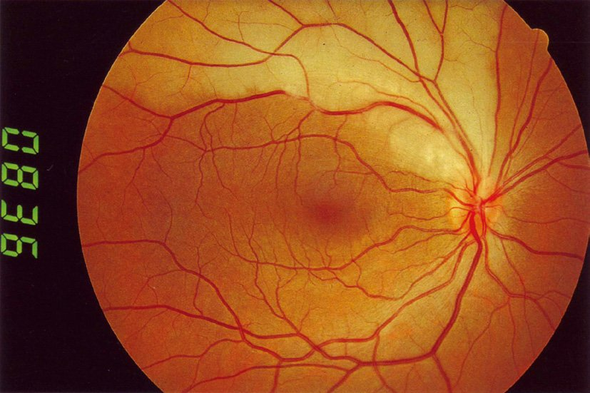
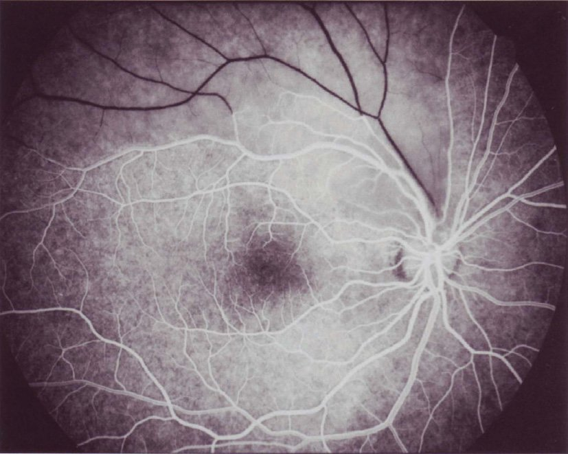
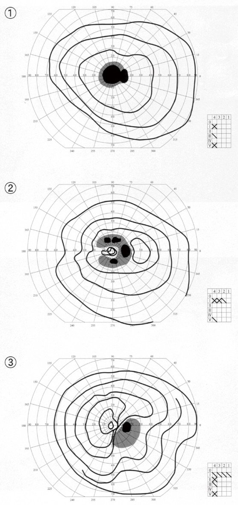
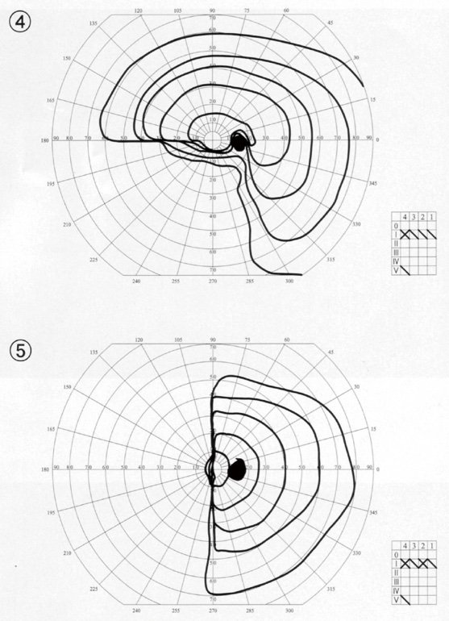
| 境界 | 意味 | 代表疾患 |
|---|---|---|
| 水平経線で切れる | 網膜神経線維が水平縫線で上下に分かれるため ＝網膜・視神経乳頭の病変 | 網膜動脈分枝閉塞症・虚血性視神経症・緑内障（鼻側階段） |
| 垂直経線で切れる | 鼻側網膜の線維が視交叉で交叉するため ＝視交叉より後方の病変 | 両耳側半盲（下垂体腺腫）・同名半盲（脳梗塞・脳腫瘍） |
| 中心に限局 | 黄斑・乳頭黄斑線維束 | 加齢黄斑変性・球後視神経炎（中心暗点） |
| 輪状・求心性 | 中間周辺部の杆体から脱落 | 網膜色素変性 |
| 盲点の拡大 | 視神経乳頭の腫脹 | うっ血乳頭・視神経乳頭炎 |
| 選択肢 | 解説 |
|---|---|
| ａ ① | 固視点を含む濃い中心暗点があり、周辺のイソプターは保たれている——球後視神経炎・黄斑疾患の像で、視力が大きく落ちる。本例は視力1.5と正常なので該当しない。 |
| ｂ ② | 中心部の周囲に多発する不規則な暗点が散らばり、イソプター全体も不整に狭くなっている——多巣性の網脈絡膜病変（多発性後極部網膜色素上皮症、ぶどう膜炎後など）を思わせる像で、単一の血管領域に一致した欠損ではない。 |
| ｃ ③ | 固視点のすぐ傍に傍中心暗点があり、イソプターは全体に不整——この形なら中心視力に影響が出ることが多く、「視力1.5で急激な視野異常」という本例とは合わない。 |
| ◯ ｄ ④ | マリオット盲点から連続して下鼻側の視野が広く欠損し、水平経線を境に上方の視野は保たれている——固視点（中心視野）は無事である。眼底写真（A）では上耳側の網膜が乳白色に混濁し、FA（B）では上耳側の動脈枝だけが黒く（造影されず）写っている——上耳側の網膜動脈分枝閉塞症である。網膜と視野は上下・鼻耳が逆なので上耳側の網膜 → 下鼻側の視野欠損、黄斑が免れているので視力1.5——すべて④と符合する。 |
| ｅ ⑤ | 垂直経線を境に鼻側（左側）の視野が失われている＝鼻側半盲である——垂直経線で切れる欠損は視交叉以降の視路病変を意味し、片眼の鼻側半盲は視交叉の外側部の病変（内頸動脈瘤など）で起こる。網膜血管の閉塞では垂直経線で切れることはない。 |
| 分類 | 原因 | 対応 |
|---|---|---|
| 生理的 | 硝子体の加齢性液化・線維の凝集 後部硝子体剝離（Weiss ring） 近視眼では若くても起こる | 経過観察（ただし初回は必ず散瞳眼底） |
| 病的 | 網膜裂孔・網膜剝離（色素・出血） 硝子体出血 ぶどう膜炎・眼内炎（炎症細胞） 眼内リンパ腫（腫瘍細胞） | 緊急〜準緊急の精査と治療 |
| 選択肢 | 解説 |
|---|---|
| ａ 緑内障 | 緑内障は視神経の疾患で、症状は視野欠損である——開放隅角では末期まで自覚がなく、急性閉塞隅角発作では眼痛・頭痛・悪心嘔吐・虹視症が出る。硝子体に混濁を作る機序がない。 |
| ｂ 白内障 | 水晶体の混濁で霧視・羞明・昼盲・単眼複視・近視化をきたす。混濁は水晶体という固定された位置にあるため視線を動かしても一緒には動かない——ふわふわ漂う飛蚊症とは見え方が異なる。 |
| ◯ ｃ 硝子体出血 | 硝子体腔に流入した血球が網膜に影を落とす——典型的には「墨を流したような」「無数の小さな点が降ってくる」と表現される急激な飛蚊症になる。量が多ければ霧視・視力低下に進む。 |
| ◯ ｄ 網膜剝離 | 裂孔原性網膜剝離の前段階である後部硝子体剝離・網膜裂孔で、硝子体の混濁（Weiss ring）・色素・出血が生じて飛蚊症になる——飛蚊症＋光視症は網膜剝離の警告症状であり、その後カーテン様の視野欠損が続く。 |
| ｅ 黄斑変性 | 加齢黄斑変性の症状は変視症・中心暗点・視力低下で、黄斑という網膜のごく一部の病変である。硝子体は透明のままなので飛蚊症は生じない（大量出血が硝子体に及べば別）。 |
| 主訴 | 責任部位 | 代表疾患 |
|---|---|---|
| 飛蚊症 | 硝子体 | 後部硝子体剝離、網膜裂孔・網膜剝離、硝子体出血、ぶどう膜炎 |
| 光視症 | 硝子体−網膜の界面（牽引） | 後部硝子体剝離、網膜裂孔・網膜剝離 |
| 変視症・小視症 | 黄斑 | 加齢黄斑変性、中心性漿液性脈絡網膜症、黄斑上膜、黄斑円孔 |
| 夜盲 | 杆体 | 網膜色素変性、ビタミンA欠乏症、小口病 |
| 昼盲・羞明 | 水晶体・錐体 | 白内障（後囊下）、錐体ジストロフィ、無虹彩症 |
| 虹視症 | 角膜浮腫 | 急性閉塞隅角緑内障発作 |
| 単眼複視 | 角膜・水晶体（屈折の乱れ） | 白内障、円錐角膜、乱視 |
| 両眼複視 | 眼球運動（神経・筋） | 脳神経麻痺、甲状腺眼症、重症筋無力症 |
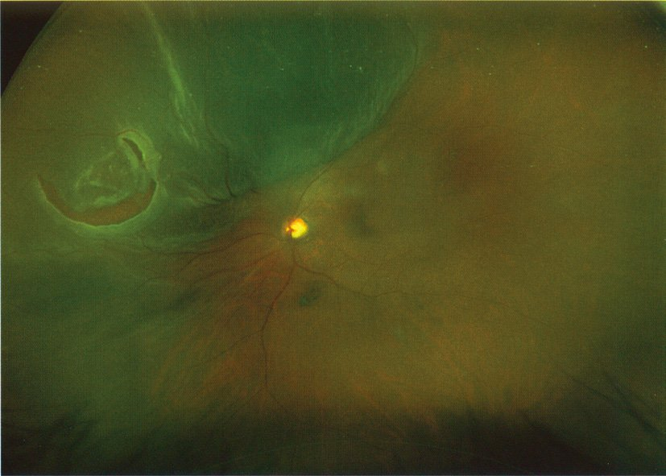
| 選択肢 | 解説 |
|---|---|
| ａ 硝子体出血 | 硝子体出血なら眼底が赤黒く霞んで透見できない——網膜の細部まで写っている本例の写真とは合わない。 |
| ｂ 加齢黄斑変性 | 黄斑に限局する疾患で、変視症・中心暗点・視力低下が主症状。矯正視力1.0が保たれ、周辺の飛蚊症・光視症を訴える本例とは症状の質が違う。 |
| ｃ 網膜色素変性 | 数十年かけて進行する夜盲・視野狭窄の疾患で、数日で発症する飛蚊症・光視症は起こさない。眼底は骨小体様色素沈着・血管狭細・乳頭蒼白。 |
| ◯ ｄ 裂孔原性網膜剝離 | 広角眼底写真では網膜が青灰色に隆起して波打ち、辺縁に馬蹄形の裂孔が認められる——裂孔原性網膜剝離である。「数日前からの飛蚊症と光視症」という前駆症状、－8Dの強度近視という強い危険因子がそろっている。まだ黄斑が剝がれていない（矯正視力1.0）ので、いま手術すれば視力予後は良い＝一刻を争う。 |
| ｅ 網膜静脈分枝閉塞症 | 動静脈交叉部の閉塞で扇状の火焔状出血が広がる疾患である。飛蚊症・光視症で発症することはなく、眼底の主役は出血であって隆起ではない。 |
| 強膜内陥術（バックリング） | 硝子体手術 | |
|---|---|---|
| 方法 | シリコンスポンジを強膜の外に縫い付け、眼球壁を内側へ凹ませて裂孔を色素上皮に押し当てる ＋冷凍凝固で癒着 | 硝子体を切除して牽引を断ち、網膜下液を排出し、ガス/シリコーンオイルでタンポナーデ ＋眼内光凝固 |
| 向くのは | 若年・有水晶体眼・周辺の単発裂孔 （水晶体を触らずに済む） | 高齢・偽水晶体眼・後極や多発の裂孔 硝子体出血や増殖膜を伴う例・巨大裂孔 |
| 欠点 | 近視化・複視・眼球運動障害・感染 | 白内障が必発（有水晶体眼）・術後の体位制限 |
| 視野の形 | 障害部位 | 代表疾患 |
|---|---|---|
| 輪状暗点 → 求心性狭窄 | 中間周辺部の杆体 | 網膜色素変性 |
| 弓状暗点（Bjerrum）＋鼻側階段 | 乳頭上下極の弓状神経線維束 | 緑内障 |
| 中心暗点 | 黄斑・乳頭黄斑線維束 | 加齢黄斑変性・黄斑円孔・球後視神経炎 |
| 盲点中心暗点 | 乳頭黄斑線維束の全長 | 中毒性・栄養性視神経症（エタンブトール、メタノール、ビタミンB12欠乏）、Leber遺伝性視神経症 |
| 盲点の拡大 | 視神経乳頭の腫脹 | うっ血乳頭、視神経乳頭炎 |
| 水平半盲（altitudinal） | 乳頭の上半/下半の虚血 | 虚血性視神経症、網膜動脈分枝閉塞症 |
| 両耳側半盲 | 視交叉 | 下垂体腺腫、頭蓋咽頭腫 |
| 同名半盲 | 視索より後方 | 脳梗塞、脳腫瘍（黄斑回避があれば後頭葉） |
| らせん状視野・管状視野 | 器質的病変なし | 心因性視覚障害 |
| 選択肢 | 解説 |
|---|---|
| ａ 緑内障 ――― 中心暗点 | 緑内障の視野障害は傍中心暗点 → Bjerrum弓状暗点 → 鼻側階段 → 求心性狭窄と進み、中心視野は最後まで残る——だから末期まで視力1.0のまま進行する。中心暗点をきたすのは黄斑疾患・球後視神経炎。 |
| ｂ 視神経炎 ――― 求心性狭窄 | 視神経炎（とくに球後視神経炎）は中心暗点が典型で、急激な視力低下・眼球運動時痛・RAPD陽性・色覚異常を伴う。求心性狭窄をきたすのは網膜色素変性の末期・緑内障の末期・視交叉部病変・ヒステリーである。 |
| ｃ 加齢黄斑変性 ――― 弓状暗点 | 加齢黄斑変性は黄斑（中心窩）の疾患なので中心暗点を作る。弓状暗点（Bjerrum暗点）は視神経乳頭の上下極に入る弓状神経線維束が傷む緑内障の所見である。 |
| ◯ ｄ 網膜色素変性 ――― 輪状暗点 | 正しい組合せ。網膜色素変性では杆体密度が最も高い中間周辺部（中心から約20〜30°）から視細胞が脱落する——その帯状の領域が抜けるとドーナツ状の暗点＝輪状暗点になる。やがて内側と外側へ広がり求心性視野狭窄となるが、中心視野（＝視力）は最後まで島のように残る。 |
| ｅ 中心性漿液性網脈絡膜症 ――― らせん状視野 | 中心性漿液性脈絡網膜症は黄斑部の限局した漿液性剝離で、中心暗点・変視症・小視症をきたす。らせん状視野は心因性視覚障害（ヒステリー）に特徴的な所見で、検査を続けるうちにイソプターが渦を巻くように狭くなっていく（器質的疾患では説明できない）。 |
| 原因 | 疾患 | 決め手 |
|---|---|---|
| ① 杆体が減る | 網膜色素変性（進行性） | 眼底三徴／ERG減弱〜消失／輪状暗点／家族歴 |
| ② 材料が足りない | ビタミンA欠乏症 | Bitot斑・角結膜乾燥／胃切除後・吸収不良・偏食／投与で可逆 |
| ③ 伝わらない | 先天停在性夜盲・小口病 | 非進行性／小口病は水尾-中村現象／ERGは陰性型 |
| 選択肢 | 解説 |
|---|---|
| ａ 隅角検査 | 隅角鏡で房水の出口である線維柱帯を観察する検査で、緑内障の病型分類（開放隅角か閉塞隅角か）・周辺虹彩前癒着・血管新生を評価する。網膜機能とは無関係。 |
| ◯ ｂ 視野検査 | 夜盲の最多の原因である網膜色素変性では、輪状暗点 → 求心性視野狭窄という特徴的な視野が得られる——診断だけでなく進行度の評価にも欠かせない。Goldmann動的視野計が周辺まで含めた全体像をとらえるのに適している。 |
| ◯ ｃ 網膜電図 | 夜盲は杆体の機能低下そのものであり、それを客観的に測れるのがERGである——網膜色素変性では早期から著明に減弱し、進行例では平坦（消失型）になる。先天停在性夜盲ではa波は保たれb波だけが落ちる（陰性型ERG）など、波形のパターンが鑑別にも役立つ。 |
| ｄ 角膜知覚検査 | 角膜の三叉神経支配を調べる検査で、角膜ヘルペス・神経麻痺性角膜症・糖尿病・コンタクトレンズ長期装用で低下する。網膜の光受容とは関係がない。 |
| ｅ Hess赤緑試験 | 赤緑眼鏡を用いて各外眼筋の働きを図示する検査で、麻痺性斜視・甲状腺眼症・眼窩壁骨折の評価に用いる。複視の精査であって夜盲とは無関係。 |
| 検査 | 反映する場所 | 異常になる疾患 |
|---|---|---|
| ERG a波 | 視細胞 | 網膜色素変性、網膜剝離（広範）、CRAO |
| ERG b波 | 双極細胞・Müller細胞 | 先天停在性夜盲・小口病（a波保たれb波減弱＝陰性型） |
| 律動様小波〈OP〉 | アマクリン細胞・内網状層（網膜循環） | 糖尿病網膜症（最も早期に減弱）、網膜静脈閉塞症 |
| EOG | 網膜色素上皮 | 卵黄状黄斑ジストロフィ（Best病）——ERG正常でEOGだけ異常 |
| VEP（視覚誘発電位） | 視神経〜後頭葉（視路） | 視神経炎（潜時延長）、多発性硬化症、乳児の視力評価 |
| 暗順応検査 | 杆体・錐体の暗順応曲線 | 網膜色素変性・ビタミンA欠乏（杆体相の閾値が上がる） |
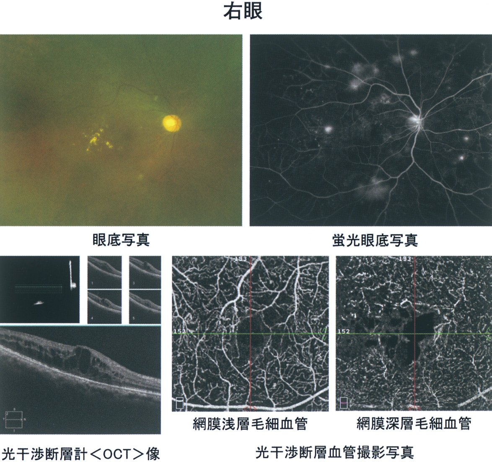
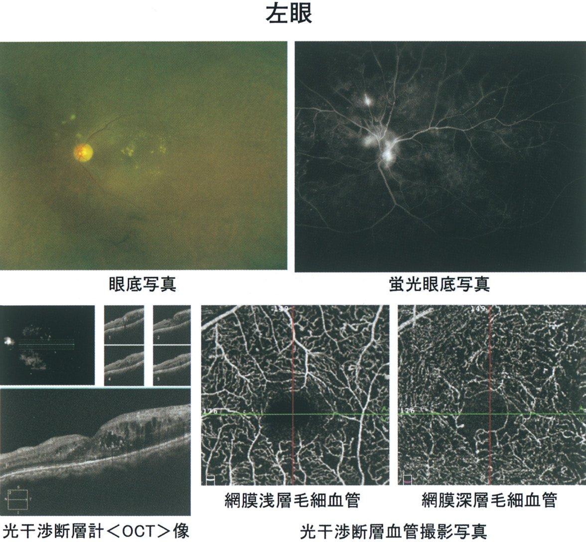
| 糖尿病網膜症 | 網膜静脈閉塞症 | 高血圧網膜症 | |
|---|---|---|---|
| 左右 | 両眼性・ほぼ対称 | 片眼性 | 両眼性 |
| 出血 | 点状・斑状（深層）が後極を中心にびまん性 | 火焔状（表層）が扇状（BRVO）または全象限（CRVO） | 火焔状（重症時） |
| 白斑 | 硬性白斑（環状）＋軟性白斑 | 軟性白斑（虚血型で多い） | 軟性白斑＋星芒状の硬性白斑 |
| 血管 | 毛細血管瘤・静脈数珠状拡張・IRMA | 静脈の怒張蛇行 | 動脈狭細・交叉現象・銅線/銀線動脈 |
| 乳頭 | 正常（増殖期はNVD） | 腫脹（CRVO） | 浮腫（＝高血圧緊急症） |
| 選択肢 | 解説 |
|---|---|
| ａ 加齢黄斑変性 | 黄斑に限局したドルーゼン・網膜色素上皮異常・脈絡膜新生血管が本態で、眼底全体に出血や白斑が散布することはない。また両眼同時に同じ程度で急速に進むこともまれ。 |
| ◯ ｂ 糖尿病網膜症 | 点状・斑状出血（深層出血）、硬性白斑（漏出）、軟性白斑（虚血）が両眼にそろい、OCTAで毛細血管の脱落が確認されている——HbA1c 8.2％の未治療糖尿病が背景にあり、増殖前糖尿病網膜症と診断できる。両眼性・左右対称であることが血管閉塞（片眼性）との決定的な違いである。 |
| ｃ 網膜細動脈瘤 | 高血圧の高齢女性に多い網膜動脈の限局した瘤で、片眼・単発のことがほとんど。破裂すると網膜下・網膜内・硝子体にわたる多層性の出血をきたすのが特徴で、本例のようなびまん性・両眼性の変化とは異なる。 |
| ｄ 網膜静脈分枝閉塞症 | 出血が閉塞した分枝の領域だけに扇状に分布し、水平縫線を越えないのが特徴。通常は片眼性で、両眼にびまん性という本例とは合わない。 |
| ｅ 網膜中心静脈閉塞症 | 4象限に火焔状（表層）出血が散布し、静脈の怒張蛇行と乳頭腫脹を伴う——やはり片眼性が原則であり、出血の形（火焔状 vs 点状・斑状）も異なる。 |
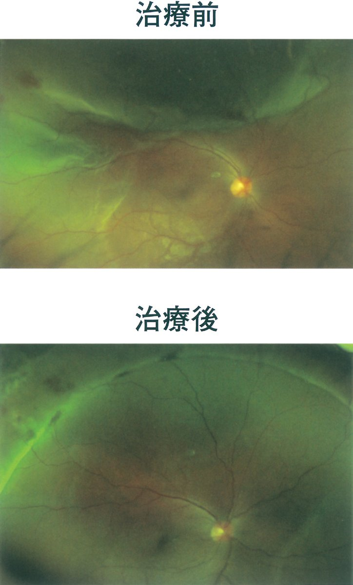
| 部位 | 外傷 |
|---|---|
| 前眼部 | 前房出血、外傷性散瞳（瞳孔括約筋断裂）、隅角後退（→遅発性の緑内障）、虹彩離断 |
| 水晶体 | 外傷性白内障（Vossius輪）、水晶体亜脱臼・脱臼（Zinn小帯断裂） |
| 後眼部 | 網膜振盪症（Berlin浮腫）、鋸状縁断裂・網膜裂孔 → 網膜剝離、黄斑円孔、脈絡膜破裂、硝子体出血、視神経管骨折 |
| 眼窩 | 眼窩底骨折（吹き抜け骨折）——下直筋の絞扼で上転障害・複視、頰部の知覚低下 |
| 選択肢 | 解説 |
|---|---|
| ａ 抗VEGF薬硝子体注射 | 黄斑浮腫や脈絡膜新生血管に対する薬物治療で、剝がれた網膜を復位させる力はない。 |
| ｂ レーザー光凝固術 | 網膜裂孔を「囲んで剝離を予防する」治療であって、すでに剝離した網膜を戻すことはできない。また入院を要する治療でもない。 |
| ｃ 光線力学的療法 | 加齢黄斑変性（とくにポリープ状脈絡膜血管症）に対して脈絡膜新生血管を選択的に閉塞させる治療で、外傷性の網膜剝離とは無縁。 |
| ◯ ｄ 強膜内陥術 | 治療前の写真では網膜が広く剝離して波打ち、治療後には網膜が復位し、周辺に強膜を凹ませた堤防状の隆起（バックル）が見える——強膜内陥術（バックリング）である。本例は16歳・有水晶体眼・外傷性——硝子体がまだ強固で液化しておらず、硝子体を触らずに済む強膜内陥術が第一選択になる典型例。術後に－2.0Dの近視が生じているのもバックルで眼軸が延びたためで、この術式の特徴を裏書きする。 |
| ｅ 硝子体手術 | 硝子体を切除する術式で、後極や多発の裂孔・増殖膜・硝子体出血を伴う例・偽水晶体眼に向く。若年の有水晶体眼では硝子体が網膜に強く癒着していて切除が難しく、術後に白内障が必発するため避けられることが多い。 |
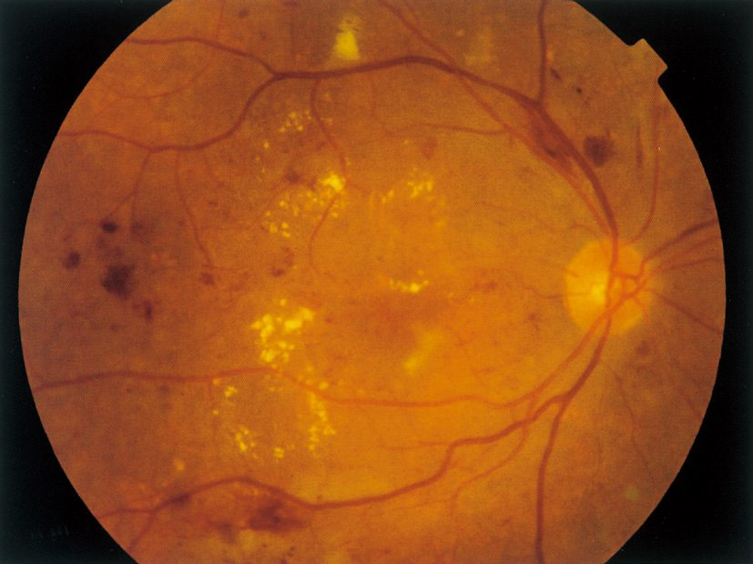
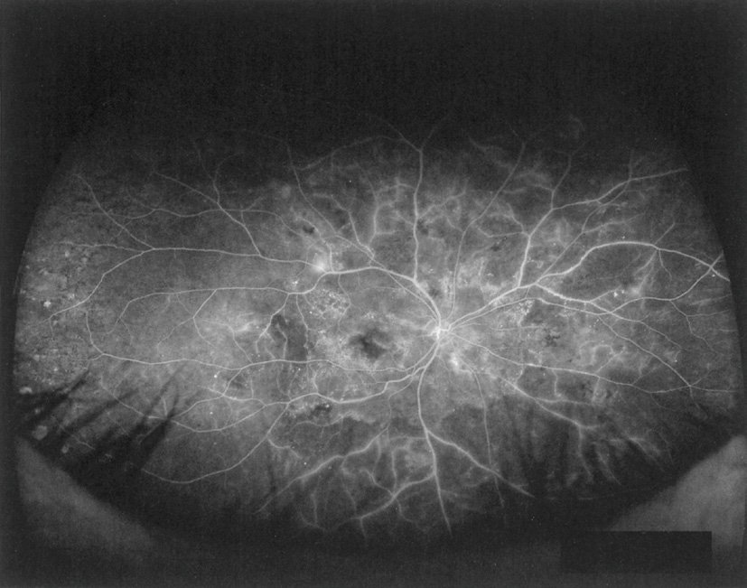
| 選択肢 | 解説 |
|---|---|
| ａ 抗菌薬点眼 | 結膜炎・角膜炎など前眼部の細菌感染に用いる。本例の病変は眼底（網膜）にあり、感染徴候も無い。 |
| ｂ 硝子体手術 | 硝子体手術は吸収しない硝子体出血・牽引性網膜剝離・進行した増殖膜に対して行う。本例は眼底が明瞭に透見でき、出血が硝子体を満たしてはいない——まだ光凝固で対応できる段階である。 |
| ◯ ｃ 網膜光凝固 | 眼底（A）には多数の点状・斑状出血と黄白色の硬性白斑があり、FA（B）では広範な無灌流領域と蛍光漏出を認める——HbA1c 11.5％の未治療糖尿病を背景にした増殖前〜増殖糖尿病網膜症である。無灌流領域が広ければ汎網膜光凝固で虚血網膜の酸素需要を減らし、VEGF産生を止めて新生血管の発生・進展を防ぐのが標準治療。同時に内科での血糖コントロールを並行させる。 |
| ｄ 抗緑内障薬点眼 | 右眼の眼圧20mmHgは正常上限であり治療対象ではない。ただし増殖網膜症を放置すれば血管新生緑内障に至るので、「今、眼圧を下げる」のではなく「将来の血管新生を防ぐ」ことが対応になる。 |
| ｅ 副腎皮質ステロイド経口投与 | 全身のステロイドは血糖を確実に上昇させ、この患者の病態を悪化させる。黄斑浮腫に対して局所（テノン囊下・硝子体内）で使うことはあるが、経口は選ばない。 |
| 網膜症の程度 | 受診間隔の目安 |
|---|---|
| 網膜症なし | 1年に1回 |
| 単純網膜症 | 3〜6か月に1回 |
| 増殖前網膜症 | 1〜2か月に1回（光凝固を検討） |
| 増殖網膜症 | 2週〜1か月に1回（治療中） |
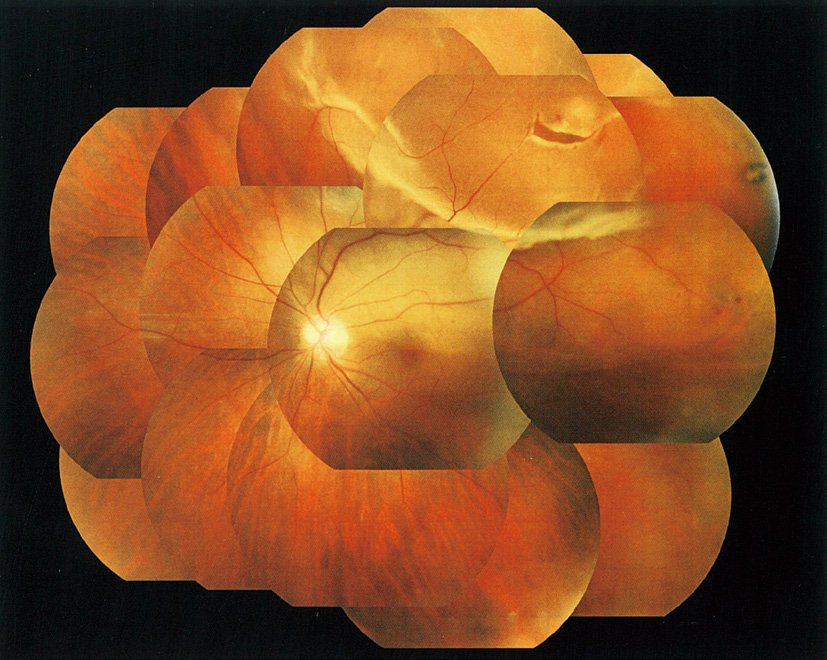
| 選択肢 | 解説 |
|---|---|
| ａ 濾過手術 | 線維柱帯切除術などの緑内障手術で、房水の新しい流出路を作って眼圧を下げる。本例の眼圧は11mmHgでむしろ低め（網膜剝離では房水が網膜下へ逃げて低眼圧になりやすい）。 |
| ◯ ｂ 硝子体手術 | 硝子体を切除して網膜への牽引を断ち、網膜下液を排出してガスやシリコーンオイルでタンポナーデし、眼内から裂孔の周囲を光凝固する——裂孔原性網膜剝離の主要な術式のひとつである。後極寄りや多発の裂孔、硝子体出血や増殖膜を伴う例、偽水晶体眼で有利。 |
| ◯ ｃ 強膜内陥術 | シリコンスポンジで強膜を外から凹ませて裂孔を網膜色素上皮に押し当て、冷凍凝固で癒着させる——もうひとつの主要術式で、有水晶体眼・周辺の単発裂孔に向く。本例のように周辺に馬蹄形裂孔があり剝離が周辺から始まっている症例は良い適応。 |
| ｄ 抗VEGF薬硝子体注射 | 浮腫を引かせ、新生血管を退縮させる薬であって、剝がれた網膜を復位させる作用は無い。適応は加齢黄斑変性・糖尿病黄斑浮腫・静脈閉塞症の黄斑浮腫・血管新生緑内障。 |
| ｅ 副腎皮質ステロイドのテノン囊下注射 | 黄斑浮腫やぶどう膜炎に対する局所の抗炎症療法。裂孔原性網膜剝離は力学的な病態であり、炎症を抑えても穴は塞がらない。 |
| 手術でしか治らない | 術式 |
|---|---|
| 裂孔原性網膜剝離 | 強膜内陥術／硝子体手術 |
| 白内障 | 水晶体超音波乳化吸引術＋眼内レンズ挿入〈PEA+IOL〉 |
| 黄斑円孔・黄斑上膜 | 硝子体手術＋内境界膜剝離（＋ガスタンポナーデ） |
| 吸収しない硝子体出血 | 硝子体手術 |
| 翼状片・眼瞼下垂・内反症 | 各々の形成手術 |
| 急性閉塞隅角緑内障（根治） | レーザー虹彩切開術／水晶体摘出 |
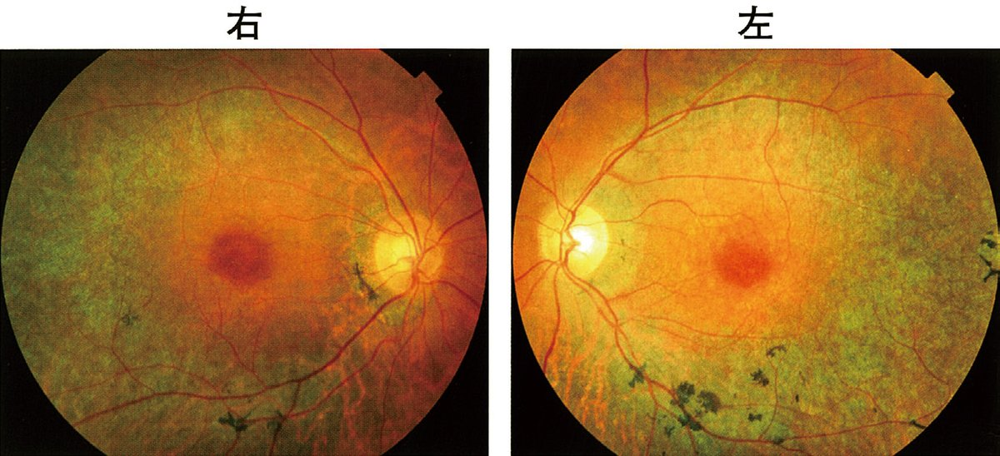
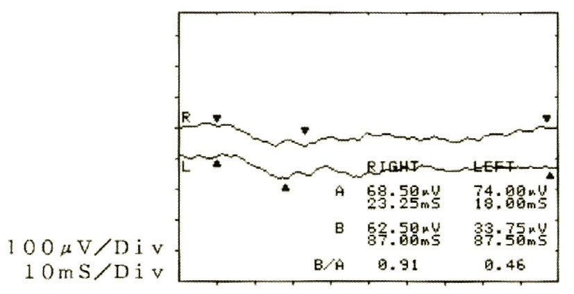
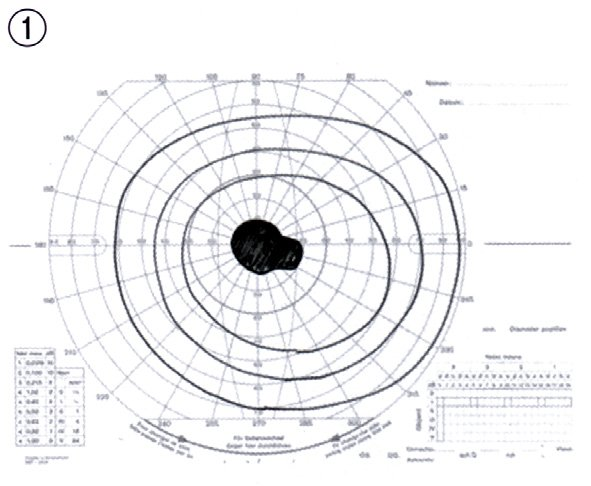
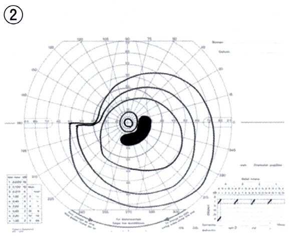
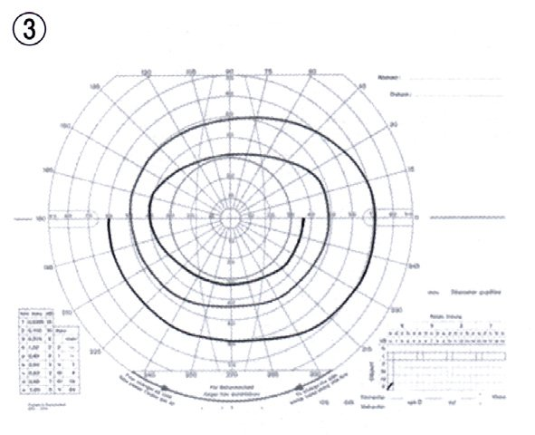
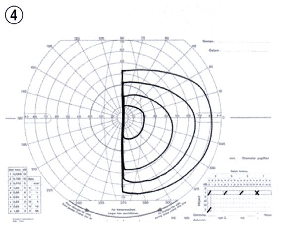
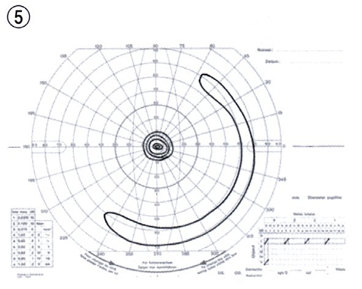
| 検査 | 所見 | 意味 |
|---|---|---|
| 眼底（A） | 骨小体様色素沈着（中間周辺部） 網膜血管の狭細化 視神経乳頭の蠟様蒼白 | 視細胞が失われ、色素上皮のメラニンが血管周囲へ遊走した結果 代謝需要が減って血管が細る |
| ERG（B） | a波・b波ともに著明に減弱〜平坦（消失型） | 視細胞そのものの機能が失われている （眼底変化に先行して異常が出る＝早期診断に有用） |
| 視野（C） | 輪状暗点 → 求心性狭窄 | 杆体密度が最大の中間周辺部から脱落するため |
| 選択肢 | 解説 |
|---|---|
| ａ ① | 固視点に濃い中心暗点があり、周辺のイソプターは正常に近い——黄斑疾患・球後視神経炎の視野で、視力が大きく落ちる。網膜色素変性では中心視野が最後まで残るので合わない。 |
| ｂ ② | 中心の暗点から鼻側へ切れ込む欠損が連続しており、イソプターも不整に狭くなっている——緑内障や視神経疾患を思わせる形で、「輪」にはなっていない。 |
| ｃ ③ | イソプターが同心円状に整い、暗点のないほぼ正常な視野である。10年進行した夜盲の患者の視野とは考えにくい。 |
| ｄ ④ | 垂直経線を境に一側の視野が完全に失われている＝半盲である——垂直経線で切れるのは視交叉以降の視路病変（下垂体腺腫・脳梗塞・脳腫瘍）のしるしで、網膜の変性疾患では起こらない。 |
| ◯ ｅ ⑤ | 中心には小さな視野の島が残り、その周囲をドーナツ状の暗点が取り囲み、さらに外側にわずかな視野が残っている——典型的な輪状暗点である。眼底（A）は骨小体様色素沈着・網膜血管の狭細化を示し、ERG（B）は両眼とも著明に平坦化している——10年かけて進行した夜盲と合わせ網膜色素変性と確定する。杆体密度が最大の中間周辺部から脱落することが輪状暗点の理由である。 |
| 症候群 | 合併するもの |
|---|---|
| Usher症候群 | 感音難聴（＋前庭機能障害） |
| Bardet-Biedl症候群 | 肥満・多指症・性腺発育不全・知的障害・腎異常 |
| Refsum病 | フィタン酸蓄積・多発神経炎・小脳失調（食事療法が効く） |
| Kearns-Sayre症候群 | ミトコンドリア病・外眼筋麻痺・心伝導障害 |
| 無βリポ蛋白血症 | 脂溶性ビタミン吸収障害・脂肪便・棘赤血球 |
| 合併症 | 頻度・特徴 |
|---|---|
| 網膜剝離（裂孔原性） | 10〜20代で発症・両眼性・多発裂孔・鋸状縁断裂／再発が多く予後不良 |
| 白内障 | 前囊下の星芒状混濁が特徴（ステロイド白内障は後囊下） 20〜30代で両眼性に進行 |
| 円錐角膜 | 摩擦による角膜の菲薄化・突出／不正乱視 |
| アトピー性角結膜炎・春季カタル | 巨大乳頭・シールド潰瘍・Trantas斑 |
| 眼瞼のヘルペス感染 | Kaposi水痘様発疹症・角膜ヘルペス |
| 網膜色素上皮の変化・緑内障 | ステロイド点眼の長期使用による |
| 選択肢 | 解説 |
|---|---|
| ａ 出血性 | 網膜下に大量の出血が溜まる出血性網膜剝離（網膜下出血）は、加齢黄斑変性の大出血・網膜細動脈瘤破裂・外傷・出血性素因でみられる。網膜剝離の分類（裂孔原性・牽引性・滲出性）では滲出性の亜型として扱われる。 |
| ｂ 牽引性 | 増殖膜が網膜を引っぱる型で、増殖糖尿病網膜症・未熟児網膜症・増殖硝子体網膜症が代表である。アトピーでも重症例や術後には増殖性変化が加わるが、典型的に問われるのは裂孔原性である。 |
| ｃ 漿液性 | 滲出性と同義に使われる語で、脈絡膜からの漿液が網膜下に溜まるもの。Vogt-小柳-原田病・中心性漿液性脈絡網膜症・後部強膜炎・妊娠高血圧症候群が代表。 |
| ｄ 滲出性 | 網膜に穴も牽引も無く、血液網膜関門の破綻で液が漏れ出て溜まる型。手術ではなく原疾患の治療（ステロイドなど）で網膜が復位する点が他の型と決定的に異なる。 |
| ◯ ｅ 裂孔原性 | アトピー性皮膚炎の患者は顔面の強い瘙痒のために眼を繰り返し叩き、こする——その衝撃が硝子体基底部を介して網膜を引き裂く。できた裂孔（とくに鋸状縁断裂）から液化硝子体が網膜下へ入り込む裂孔原性網膜剝離が生じる。特徴は若年発症・両眼性・多発性の裂孔・再発しやすいこと——若い患者の網膜剝離を見たらアトピーと強度近視を必ず問診する。 |
| 選択肢 | 解説 |
|---|---|
| ａ 黄斑円孔 | 後部硝子体の接線方向の牽引で中心窩に全層の孔が開く疾患で、変視症と中心暗点をきたす。病変は黄斑に限局し、網膜の虚血は起こらないのでVEGFも産生されない。 |
| ｂ 加齢黄斑変性 | 新生血管は生じるが脈絡膜由来（Bruch膜を破って網膜下へ）で、網膜の広範な虚血は無い。虹彩や隅角に新生血管が及ぶことは原則としてない。 |
| ｃ 網膜色素変性 | 視細胞の遺伝性変性であり血管新生をきたさない。合併症は白内障（後囊下）と黄斑浮腫である。 |
| ◯ ｄ 網膜中心静脈閉塞症 | 虚血型CRVOでは網膜全体に広範な無灌流領域ができ、大量のVEGFが房水を通って前房へ運ばれる——その結果虹彩表面と隅角に新生血管（虹彩ルベオーシス）が生じ、血管新生緑内障に至る。発症3か月ごろに多いことから「100日緑内障」と呼ばれる。虹彩ルベオーシスの三大原因は増殖糖尿病網膜症・虚血型CRVO・眼虚血症候群。 |
| ｅ 中心性漿液性脈絡網膜症 | 網膜色素上皮のバリアが破れて黄斑部に漿液性剝離ができる疾患で、30〜50代男性・ストレス・ステロイドが背景。虚血ではないので新生血管は生じず、多くは自然軽快する。 |
| 虚血をつくる病気 | VEGFが起こすこと | 治療 |
|---|---|---|
| 増殖糖尿病網膜症 | 網膜新生血管 → 硝子体出血・牽引性網膜剝離 黄斑浮腫／虹彩ルベオーシス | 汎網膜光凝固／抗VEGF／硝子体手術 |
| 網膜中心静脈閉塞症（虚血型） | 黄斑浮腫／虹彩ルベオーシス → 100日緑内障 | 抗VEGF／汎網膜光凝固 |
| 網膜静脈分枝閉塞症 | 黄斑浮腫（主）／限局した新生血管 | 抗VEGF／部分的光凝固 |
| 眼虚血症候群（内頸動脈狭窄） | 虹彩ルベオーシス・網膜血管拡張 | 抗VEGF・光凝固＋頸動脈の治療 |
| 未熟児網膜症 | 周辺無血管領域からの新生血管 → 牽引性網膜剝離 | 光凝固／抗VEGF |
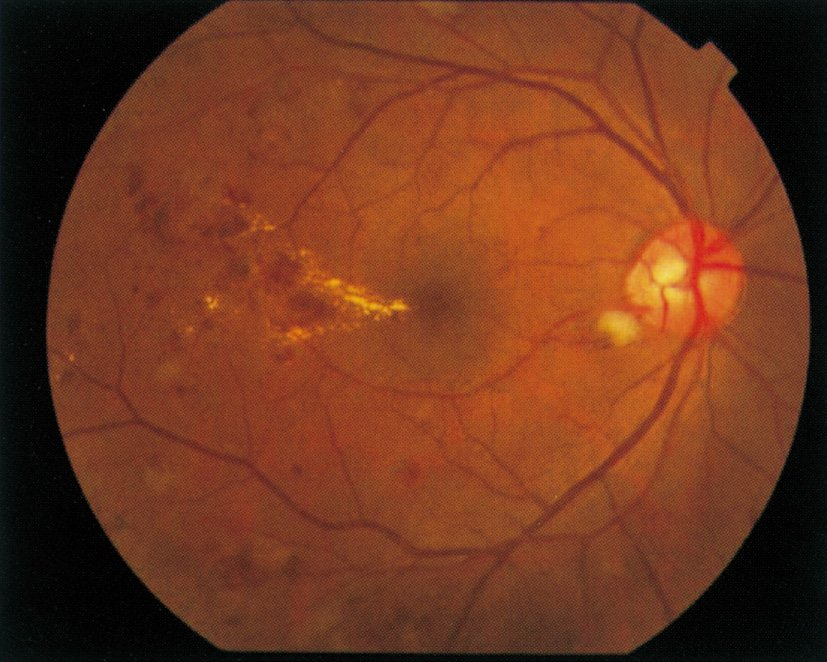
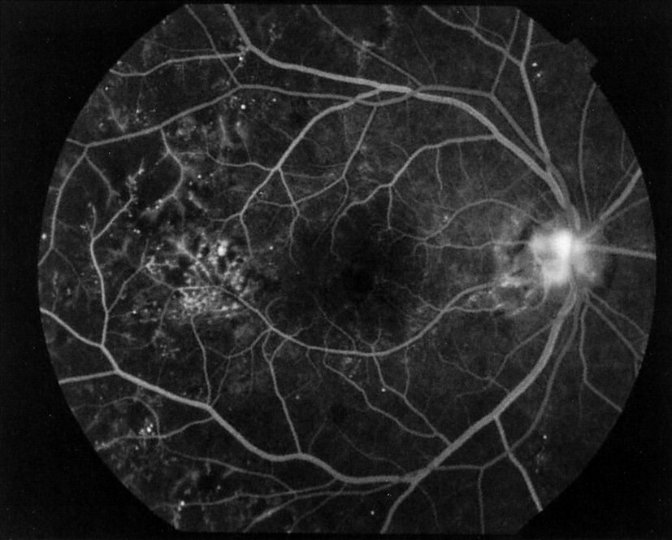
| 選択肢 | 解説 |
|---|---|
| ａ 経過観察 | 右眼のFA（B）には広範な無灌流領域と新生血管からの蛍光漏出があり、左眼とまったく同じ経過（硝子体出血 → 失明寸前）をたどる寸前である——視力1.0という数字に惑わされてはいけない。増殖網膜症は黄斑が無事なかぎり無症状である。 |
| ｂ 硝子体手術 | 硝子体手術は吸収しない硝子体出血・牽引性網膜剝離に対する治療で、左眼に予定されているとおりである。右眼は眼底が明瞭に観察でき、まだ光凝固で先手を打てる段階。 |
| ◯ ｃ 網膜光凝固 | 右眼は硬性白斑・網膜出血に加え、FAで広範な無灌流と新生血管からの強い漏出を認める増殖糖尿病網膜症である——左眼を失った今、唯一残された眼を同じ運命から救うためにただちに汎網膜光凝固を行う。視力が保たれているうちに凝固を完了させることが失明を防ぐ唯一の方法である。 |
| ｄ 光線力学的療法 | ベルテポルフィリンと弱いレーザーで脈絡膜新生血管を選択的に閉塞させる治療。適応は加齢黄斑変性（とくにポリープ状脈絡膜血管症）で、網膜由来の新生血管には用いない。 |
| ｅ 副腎皮質ステロイド内服 | 全身のステロイドは血糖を上昇させ糖尿病を悪化させる。増殖網膜症の進行を止める作用はない。 |
| 経路 | 結末 | 手前で断つ手段 |
|---|---|---|
| 新生血管の破綻 | 硝子体出血（本例の左眼） | 汎網膜光凝固／出血後は硝子体手術 |
| 増殖膜の収縮 | 牽引性網膜剝離 | 汎網膜光凝固／進行例は硝子体手術 |
| VEGFの前房への拡散 | 血管新生緑内障 | 汎網膜光凝固＋抗VEGF／末期は濾過手術 |
| 遺伝性（約40%） | 散発性（約60%） | |
|---|---|---|
| 1つ目の変異 | 生殖細胞系列（全身の細胞が持つ） | 体細胞 |
| 発症 | 両眼性・多発性 | 片眼性・単発 |
| 年齢 | 1歳未満が多い | 2〜3歳 |
| 二次癌 | 骨肉腫などのリスクが高い （放射線治療は避ける） | 通常の頻度 |
| 遺伝 | 子に常染色体顕性で伝わる（浸透率約90%） | 伝わらない |
| 選択肢 | 解説 |
|---|---|
| ａ 男児に多い。 | 網膜芽細胞腫に性差は無い（男女ほぼ同数）。男児に多い眼疾患としてはCoats病・色覚異常（X連鎖）などがある。 |
| ｂ 良性腫瘍である。 | 悪性腫瘍である——視神経を伝って頭蓋内へ直接浸潤し、脈絡膜を破れば血行性に骨・骨髄・肝へ転移する。治療しなければ致死的だが、早期発見できれば5年生存率は95%以上。 |
| ｃ 学童期にみられる。 | 好発は5歳未満（平均1.5〜2歳）で、両眼性（遺伝性）は1歳未満、片眼性（散発）は2〜3歳に多い。学童期以降の発症はまれである。 |
| ◯ ｄ 石灰化がみられる。 | 腫瘍は増大すると中心部が壊死し、そこにカルシウムが沈着する——CTで腫瘍内の石灰化が確認できることは診断上きわめて重要で、Coats病・第一次硝子体過形成遺残など他の白色瞳孔との鑑別点になる。超音波でも高エコーと音響陰影として捉えられる。なお生検は腫瘍を眼外へ播種させるため禁忌で、画像と眼底所見で診断する。 |
| ｅ 結膜充血がみられる。 | 初期は痛くも赤くもない——だからこそ発見が遅れる。充血・眼痛が出るのは腫瘍が進行して続発緑内障や眼内炎症を起こした段階で、「網膜芽細胞腫の特徴」として挙げるものではない。 |
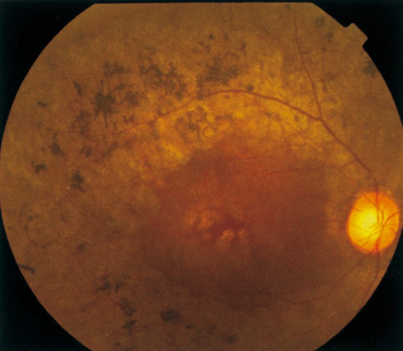
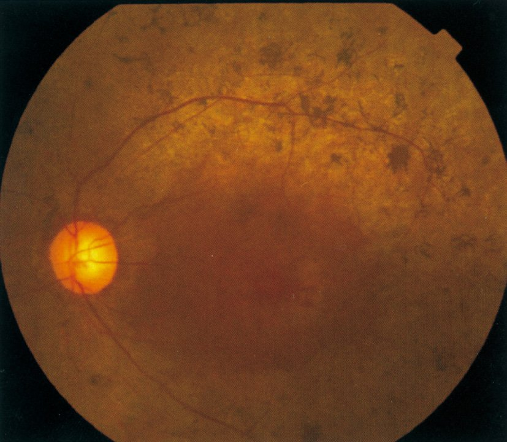
| 選択肢 | 解説 |
|---|---|
| ａ 色覚検査 | 先天色覚異常や錐体ジストロフィ・視神経疾患の評価に用いる。網膜色素変性でも進行期に色覚異常が出うるが、診断を決める検査ではない。 |
| ｂ 隅角検査 | 隅角鏡で線維柱帯を観察し、緑内障の病型（開放隅角か閉塞隅角か）を決める検査。網膜の機能とは無関係。 |
| ｃ 眼軸長検査 | 超音波や光学的手法で眼球の前後径を測る検査で、白内障手術の眼内レンズ度数計算・近視の評価に用いる。夜盲の原因を明らかにはしない。 |
| ｄ 視覚誘発電位 | VEPは視神経から後頭葉までの視路の機能をみる検査で、視神経炎（潜時延長）・多発性硬化症・乳幼児や詐病の視力評価に用いる。網膜そのものの機能は評価できない。 |
| ◯ ｅ 網膜電図〈ERG〉 | 眼底写真は中間周辺部の骨小体様色素沈着・網膜血管の狭細化・視神経乳頭の蠟様蒼白という網膜色素変性の三徴を示している。夜盲は杆体の機能低下そのものであり、それを客観的に測れるのがERG——網膜色素変性では早期から著明に減弱し、進行例では平坦（消失型）になる。眼底変化が乏しい時期でも異常が出るため確定診断に最も有用である。 |
| 検査 | 刺激と記録 | 測っている場所 | 代表的な異常 |
|---|---|---|---|
| ERG（網膜電図） | 角膜にコンタクトレンズ電極を置き 閃光を当てる | 網膜（a波＝視細胞、b波＝双極細胞、 OP＝アマクリン細胞/網膜循環） | 網膜色素変性（減弱〜消失） 糖尿病網膜症（OP減弱） 先天停在性夜盲（陰性型） |
| EOG（眼球電図） | 明暗順応下で眼球運動時の 角膜-網膜電位差を測る | 網膜色素上皮 | Best病（ERG正常・EOGのみ異常） |
| VEP（視覚誘発電位） | 閃光や市松模様を見せ 後頭部で脳波を記録 | 視神経〜視放線〜後頭葉 | 視神経炎（潜時延長）、多発性硬化症 乳幼児・詐病の他覚的視力評価 |
| 成分 | 発生源 | 意味 |
|---|---|---|
| a波（最初の陰性波） | 視細胞（錐体・杆体） | 光を受け取る層が生きているか |
| b波（続く大きな陽性波） | 双極細胞・Müller細胞（内顆粒層） | 信号が次の層へ伝わっているか |
| 律動様小波〈OP〉 （b波の立ち上がりに乗る小波） | アマクリン細胞・内網状層 | 網膜内層の血液循環 |
| c波 | 網膜色素上皮 | 色素上皮の機能（臨床では通常記録しない） |
| 選択肢 | 解説 |
|---|---|
| ａ 加齢白内障 | 水晶体の混濁は網膜に届く光の量を減らすのでERG全体の振幅がやや下がることはあるが、OPだけが選択的に減弱することはない。網膜自体の機能は保たれている。 |
| ◯ ｂ 糖尿病網膜症 | 律動様小波〈OP〉はアマクリン細胞を含む内網状層で発生し、網膜内層の血液循環に強く依存している——糖尿病では網膜の毛細血管障害が最初に起こるため、眼底に所見が出る前の段階からOPが減弱する。つまりOPは糖尿病網膜症の最も早期の他覚的指標であり、重症度の評価や予後予測にも使われる。 |
| ｃ 角膜ヘルペス | 単純ヘルペスウイルスによる角膜の感染症で、樹枝状角膜炎・角膜知覚低下が特徴。病変は角膜に限局し、網膜機能に影響しない。 |
| ｄ 乾性角結膜炎 | 涙液減少による角結膜上皮の障害（ドライアイ）で、Sjögren症候群などが背景にある。やはり前眼部の疾患である。 |
| ｅ 流行性角結膜炎 | アデノウイルス（8型など）による強い伝染性の結膜炎で、耳前リンパ節腫脹・偽膜・角膜上皮下混濁を伴う。網膜は障害されない。 |
| 疾患 | ERGの特徴 |
|---|---|
| 網膜色素変性 | a波・b波ともに減弱 → 消失型（早期から異常） |
| 糖尿病網膜症 | OPが最も早期に減弱／進行すればb波も低下 |
| 網膜中心動脈閉塞症 | b波減弱・a波保存＝陰性型ERG （内層のみ虚血し、視細胞は脈絡膜に養われて残るため） |
| 先天停在性夜盲・小口病 | 陰性型ERG（b波のみ減弱） |
| 広範な網膜剝離 | 剝離範囲に応じて全体が減弱 |
| 錐体ジストロフィ | 明順応（錐体）ERGのみ減弱、杆体ERGは保たれる |
| Best病（卵黄状黄斑ジストロフィ） | ERG正常・EOGのみ異常（黄斑だけの病変はERGに出にくい） |
| 白内障・硝子体出血 | 光量低下でわずかに減弱するのみ（網膜は正常） |
| 型 | 閉塞の場所と原因 | 代表 |
|---|---|---|
| 血管新生緑内障 | 隅角を線維血管膜が覆う → やがてPASで閉塞 | 増殖糖尿病網膜症・虚血型CRVO・眼虚血症候群 |
| ステロイド緑内障 | 線維柱帯の細胞外基質が増加して流出抵抗が上がる | ステロイド点眼・全身投与（数週で発症しうる） |
| ぶどう膜炎続発緑内障 | 炎症細胞・フィブリンが線維柱帯を塞ぐ／虹彩後癒着で瞳孔ブロック | Posner-Schlossman症候群、サルコイドーシス |
| 水晶体起因 | 膨隆した水晶体が瞳孔ブロック／水晶体融解緑内障（過熟白内障の蛋白が漏出） | 白内障の放置 |
| 外傷後（隅角後退緑内障） | 鈍的外傷で隅角が裂けて瘢痕化 | 受傷から年余を経て発症 |
| 血球崩壊緑内障 | 変性赤血球が線維柱帯を詰まらせる | 陳旧性の前房出血・硝子体出血 |
| 選択肢 | 解説 |
|---|---|
| ａ 翼状片 | 鼻側の結膜下組織が三角形に角膜へ侵入してくる変性疾患で、紫外線曝露が関与する。乱視や視軸への進入で視力を落とすが、眼圧とも新生血管とも関係しない。 |
| ｂ 視神経炎 | 視神経の炎症で急激な視力低下・眼球運動時痛・中心暗点・RAPD陽性をきたす——多発性硬化症・視神経脊髄炎との関連が重要だが、眼圧は正常で新生血管も生じない。 |
| ｃ 動眼神経麻痺 | 眼瞼下垂・眼球運動障害（外下方偏位）・瞳孔散大をきたす。後交通動脈瘤（瞳孔散大あり）と糖尿病（瞳孔回避）の鑑別が要点だが、眼圧上昇の原因にはならない。 |
| ◯ ｄ 網膜中心静脈閉塞症 | 虚血型CRVOでは網膜全体の広範な無灌流からVEGFが大量に産生され、房水に乗って前房に達する——その結果虹彩ルベオーシスと隅角の新生血管が生じ、線維血管膜が線維柱帯を覆って血管新生緑内障となる。発症3か月ごろに多く「100日緑内障」と呼ばれる——本例の「2か月前から」という経過にも合致する。ほかに増殖糖尿病網膜症・眼虚血症候群が同じ機序で眼圧を上げる。 |
| ｅ 角膜ジストロフィー | 遺伝性に角膜の特定の層に異常物質が沈着する疾患群（顆粒状・格子状・斑状など）。両眼性・進行性の角膜混濁をきたすが、眼圧には影響しない。Fuchs角膜内皮ジストロフィでは角膜浮腫を生じるがやはり新生血管とは無関係。 |
| 原因 | 手がかり |
|---|---|
| 増殖糖尿病網膜症 | 両眼性・糖尿病歴・出血と白斑・光凝固斑 |
| 虚血型網膜中心静脈閉塞症 | 片眼性・数か月前の急な視力低下・4象限の出血（陳旧例では退色して分かりにくい） |
| 眼虚血症候群 | 片眼性・高齢/動脈硬化・眼底は静脈拡張と中間周辺部の点状出血のみで目立たない・頸動脈雑音／一過性黒内障の既往 |
| 選択肢 | 解説 |
|---|---|
| ａ 高眼圧 | 高眼圧は緑内障の原因であって、網膜剝離の原因ではない——むしろ網膜剝離では房水が裂孔から網膜下へ逃げるため眼圧は低下する。 |
| ◯ ｂ 網膜裂孔 | 網膜に開いた全層の穴から液化した硝子体が網膜下へ回り込む——裂孔原性網膜剝離で、網膜剝離の中で最も多い。裂孔は後部硝子体剝離のときに硝子体との癒着が強い部位（硝子体基底部・格子状変性）が引き裂かれてできる。 |
| ｃ 眼位異常 | 斜視・斜位など両眼の視線が合わない状態で、複視・弱視・立体視の障害をきたす。網膜そのものは正常であり、剝離とは無関係。 |
| ｄ 水晶体融解 | 過熟白内障で変性した水晶体蛋白が水晶体囊から漏れ出し、マクロファージが線維柱帯を詰まらせる——水晶体融解緑内障を起こす。これは緑内障の話であって網膜剝離の原因ではない。 |
| ◯ ｅ 眼内増殖組織による牽引 | 増殖膜が収縮して網膜を硝子体側へ引き剝がす＝牽引性網膜剝離——代表は増殖糖尿病網膜症・未熟児網膜症・増殖硝子体網膜症〈PVR〉。網膜に穴は無いため光凝固やバックルでは治らず、硝子体手術で膜そのものを切除する必要がある。 |
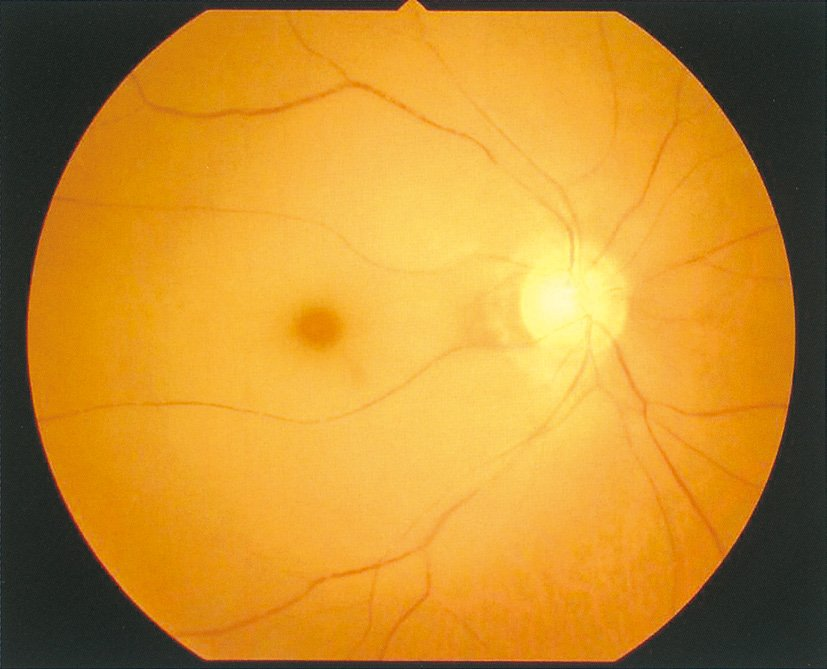
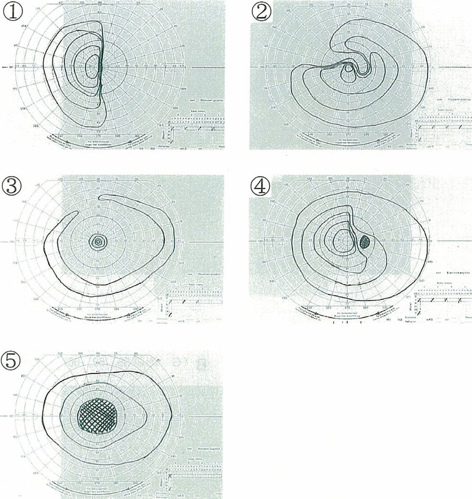
| 選択肢 | 解説 |
|---|---|
| ａ ① | 垂直経線を境に一側の視野が失われている＝半盲——垂直経線で切れるのは視交叉以降の視路病変のしるしで、眼底に異常がある本例とは病巣の階層が違う。 |
| ｂ ② | イソプターが渦を巻くように狭くなる＝らせん状視野——心因性視覚障害（ヒステリー）に特徴的で、器質的疾患では説明できない形である。 |
| ｃ ③ | 中心の小さな島の周囲をドーナツ状の暗点が囲む輪状暗点である——網膜色素変性の視野で、10年単位で進行する夜盲を伴う。急激な発症の本例とは合わない。 |
| ｄ ④ | イソプターがほぼ同心円状に整い、マリオット盲点以外に暗点のない、ほぼ正常な視野である。視力0.04の眼の視野ではありえない。 |
| ◯ ｅ ⑤ | 中心を含む広い範囲が絶対暗点となり、周辺の視野だけがかろうじて残っている——眼底（A）は後極の網膜が乳白色に混濁し、中心窩が赤く透けて見える（cherry red spot）、動脈は細い——網膜中心動脈閉塞症〈CRAO〉である。心房細動という典型的な塞栓源があり、突然・無痛性・高度（0.04）の視力低下という経過も一致する。 |
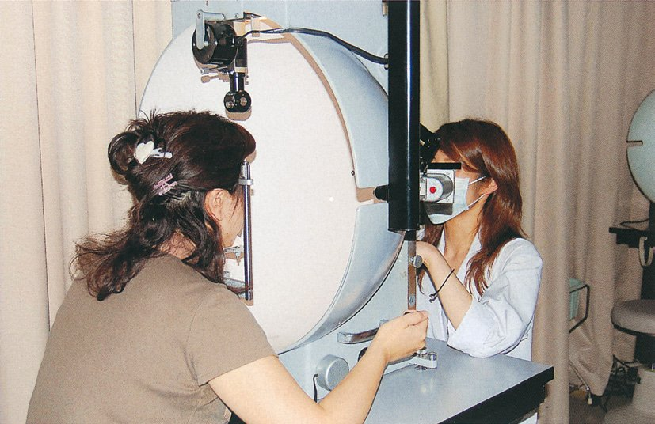
| 動的視野計（Goldmann） | 静的視野計（Humphrey） | |
|---|---|---|
| やり方 | 検者が視標を周辺から中心へ動かし、見えた点をつないでイソプター（等感度曲線）を描く | 決まった位置に明るさを変えた光を点滅させ、見えたらボタンを押す（自動・定量的） |
| 得意 | 周辺を含む視野全体の形 網膜色素変性・視路疾患・小児や高齢者 | 中心30°の感度の微細な低下 緑内障の早期発見と経過観察 |
| 短所 | 検者の技量に左右される・時間がかかる | 周辺は測らない・集中力を要する |
| 選択肢 | 解説 |
|---|---|
| ａ 斜 視 | 斜視の検査は角膜反射法（Hirschberg法）・遮閉試験（cover test）・Hess赤緑試験・両眼視機能検査である。視野計は用いない。 |
| ｂ 白内障 | 白内障の診断は細隙灯顕微鏡で水晶体の混濁を直接観察して行う。視野検査で混濁の有無は分からない（混濁が強ければ全体の感度が下がるだけである）。 |
| ｃ 糖尿病網膜症 | 診断は眼底検査・蛍光眼底造影・OCTで行う。汎網膜光凝固の後に視野狭窄の評価として視野検査を行うことはあるが、診断のための検査ではない。 |
| ◯ ｄ 網膜色素変性 | 写真は大きな半球状のボウルの前に顎を載せ、検者が反対側から視標を動かしている＝Goldmann動的視野計である。網膜色素変性では輪状暗点 → 求心性視野狭窄という特徴的な視野が得られ、診断だけでなく進行度の評価・身体障害者手帳の判定にも用いる。本疾患は視力が保たれたまま視野だけが失われていくので、視野検査でしか障害の実像を捉えられない。 |
| ｅ 加齢黄斑変性 | 黄斑という中心のごく狭い範囲の疾患であり、診断は眼底検査・OCT・蛍光眼底造影で行う。自覚的な検出にはAmslerチャート（変視症・中心暗点）が簡便である。 |
| 写っているもの | 検査 |
|---|---|
| 大きな白い半球のボウル・検者が反対側から視標を動かす | Goldmann動的視野計 |
| 腕に静脈路・眼底カメラ | 蛍光眼底造影〈FA/ICGA〉（→NO.124） |
| 角膜にコンタクトレンズ型電極・閃光刺激装置 | 網膜電図〈ERG〉 |
| 後頭部に頭皮電極・市松模様のモニター | 視覚誘発電位〈VEP〉 |
| 細隙状の光を斜めから当てる顕微鏡 | 細隙灯顕微鏡（前眼部・水晶体） |
| 患者の眼に触れずに空気を吹き付ける／探子を当てる | 眼圧測定（非接触式／Goldmann圧平眼圧計） |
| 頭にバンドを巻いた凸レンズ越しの検査 | 双眼倒像鏡（周辺眼底） |
| コンタクトレンズ型の鏡を角膜に載せる | 隅角鏡／Goldmann三面鏡 |
| 所見 | 対応 |
|---|---|
| 新生血管あり（増殖期） | ただちに汎網膜光凝固 |
| 広い無灌流領域（増殖前期） | 汎網膜光凝固を検討（血糖是正の予定・妊娠・通院困難などで前倒し） |
| 黄斑浮腫あり | 抗VEGF薬硝子体注射（光凝固より優先） |
| 硝子体出血が吸収しない／牽引性網膜剝離 | 硝子体手術 |
| 選択肢 | 解説 |
|---|---|
| ａ 経過観察 | 新生血管がある＝増殖糖尿病網膜症であり、放置すれば硝子体出血・牽引性網膜剝離・血管新生緑内障へ進む——視力1.2は「黄斑がまだ無事」という意味にすぎず、安全の保証ではない。 |
| ｂ 止血薬内服 | 眼底出血に対して止血薬（カルバゾクロム等）が処方されることがあるが、有効性のエビデンスは乏しく、病態の進行を止める力はない。出血の原因である新生血管を減らすことが治療である。 |
| ｃ 硝子体手術 | 硝子体手術は吸収しない硝子体出血・牽引性網膜剝離などすでに起きてしまった合併症に対する治療である。本例は眼底が明瞭に観察できまだ光凝固で先手を打てる段階で、侵襲の大きい手術を先に選ぶ理由がない。 |
| ◯ ｄ 網膜レーザー光凝固 | 両眼に広範な無血管野（無灌流領域）と網膜新生血管——増殖糖尿病網膜症である。汎網膜光凝固〈PRP〉で虚血網膜の酸素需要を減らし、VEGF産生を止めて新生血管を退縮させるのが標準治療。大規模試験（DRS/ETDRS）で高度視力低下のリスクを半減させることが示されている——視力が良いうちに完了させることが肝要。 |
| ｅ 副腎皮質ステロイドのテノン囊下注射 | 局所ステロイドは黄斑浮腫に対して抗VEGF薬が使えない場合などに用いる。新生血管や無灌流領域そのものには効かず、眼圧上昇・白内障の副作用がある。 |
| 部位 | 合併症 | 特徴 |
|---|---|---|
| 網膜 | 糖尿病網膜症（単純→増殖前→増殖） 糖尿病黄斑浮腫 | 失明原因の上位／黄斑浮腫はどの病期でも起こる |
| 虹彩・隅角 | 虹彩ルベオーシス → 血管新生緑内障 | 増殖期のVEGFが前房へ拡散して生じる／難治 |
| 水晶体 | 糖尿病白内障／一過性の屈折変化 | ソルビトール蓄積／血糖の変動で近視化・遠視化する |
| 角膜 | 角膜上皮障害・知覚低下・遷延性上皮欠損 | 神経障害と創傷治癒遅延による |
| 外眼筋（脳神経） | 動眼神経麻痺・外転神経麻痺 | 動眼神経麻痺では瞳孔が保たれる（瞳孔回避）——動脈瘤（瞳孔散大あり）との鑑別に決定的 |
| 全体 | 易感染性（眼内炎・眼窩蜂巣炎）・手術後の炎症遷延 | 周術期の血糖管理が要る |
| 選択肢 | 解説 |
|---|---|
| ａ 結膜下出血 | 結膜の小血管が破れて白目が真っ赤になるもので、咳・いきみ・外傷・高血圧・加齢で起こる。痛みも視力低下もなく1〜2週で自然に吸収する。糖尿病網膜症とは無関係。 |
| ｂ 強膜炎 | 強膜の炎症で強い眼痛（夜間に増悪）・深部の紫紅色の充血をきたす——約半数に関節リウマチ・ANCA関連血管炎・再発性多発軟骨炎などの全身疾患が背景にある。糖尿病では起こらない。 |
| ◯ ｃ 虹彩ルベオーシス | 網膜の広範な無灌流から産生されたVEGFが房水に乗って前房へ達し、虹彩表面と隅角に新生血管を生やす——増殖糖尿病網膜症の重要な眼所見であり、血管新生緑内障の前段階である。診察では瞳孔縁から探すのがこつ。 |
| ｄ 白内障 | 糖尿病では白内障が早く進む（糖尿病白内障）のは事実だが、それは水晶体内のソルビトール蓄積による浸透圧性の変化で網膜症の病期とは独立している——「増殖網膜症の眼所見」として挙げるものではない。 |
| ◯ ｅ 硝子体出血 | 網膜表面に生えた新生血管が破れて硝子体腔へ出血する——増殖期に特有の所見である。後部硝子体剝離や眼球運動で新生血管が引っぱられて起こり、急激な飛蚊症の増加と視力低下で発症する。眼底が透見できないときは超音波Bモードで網膜剝離の有無を確認する。 |
| 時期 | 起きること | すべきこと |
|---|---|---|
| 発症時 | 急な霧視・視力低下／4象限の火焔状出血 | 虚血型か非虚血型かを判定（視力・RAPD・FA） |
| 〜3か月 | 黄斑浮腫が視力を落とす | 抗VEGF薬硝子体注射／毎回、瞳孔縁と隅角を診る |
| 3か月前後 | 虹彩ルベオーシス出現 | ただちに抗VEGF＋汎網膜光凝固 |
| それ以降 | 隅角閉塞（PAS）→ 難治性の高眼圧・眼痛 | 濾過手術・チューブシャント／疼痛管理 |
| 選択肢 | 解説 |
|---|---|
| ａ 視神経乳頭炎 | 視神経の前部の炎症で、急激な視力低下・中心暗点・RAPD陽性・乳頭の発赤腫脹をきたす。網膜の虚血は起こらず、眼圧は正常である。 |
| ◯ ｂ 網膜中心静脈閉塞症 | 虚血型CRVOでは網膜全体に広範な無灌流領域ができ、大量のVEGFが房水を通って前房に達する——虹彩ルベオーシス → 隅角の線維血管膜 → 血管新生緑内障と進む。発症3か月ごろに多いため「100日緑内障」と呼ばれ、虚血型CRVOの約20〜30%に生じるとされる。正答率40%——「血管新生緑内障＝糖尿病」と短絡すると外す問題である。 |
| ｃ 網膜色素変性 | 視細胞の遺伝性変性で血管新生をきたさない。眼圧も正常で、合併症は白内障（後囊下）と黄斑浮腫である。 |
| ｄ 中心性漿液性網脈絡膜症 | 網膜色素上皮のバリアが局所的に破れて黄斑部に漿液性剝離ができる疾患——30〜50代男性・ストレス・ステロイドが背景で、多くは自然軽快する。虚血ではない。 |
| ｅ 加齢黄斑変性 | 新生血管は生じるが脈絡膜由来で、網膜の広範な虚血は無い——だから虹彩や隅角には及ばない。「新生血管＝ルベオーシス」ではなく、どこの血管が、なぜ生えたかを区別することが重要。 |
| 網膜由来の新生血管 | 脈絡膜由来の新生血管〈CNV〉 | |
|---|---|---|
| 原因 | 網膜の虚血（無灌流領域） | Bruch膜・網膜色素上皮の加齢変化や破綻 |
| 疾患 | 増殖糖尿病網膜症・網膜静脈閉塞症・眼虚血症候群・未熟児網膜症・Eales病 | 加齢黄斑変性・強度近視・血管線条症・外傷性脈絡膜破裂 |
| 伸びる場所 | 網膜表面 → 硝子体腔／虹彩・隅角へも波及 | Bruch膜を破って網膜色素上皮下・網膜下 |
| 結末 | 硝子体出血・牽引性網膜剝離・血管新生緑内障 | 滲出・出血 → 瘢痕（円板状瘢痕）→ 中心暗点 |
| 治療 | 汎網膜光凝固（＋抗VEGF） | 抗VEGF薬（＋光線力学的療法） |
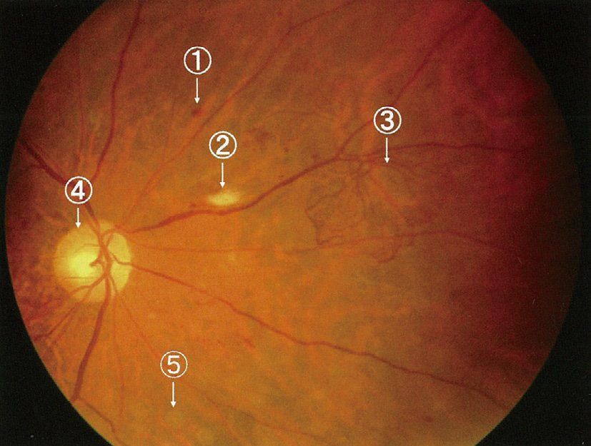
| 選択肢 | 解説 |
|---|---|
| ａ ① | ①が指すのは網膜内の小さな点状出血である——糖尿病網膜症では日常的にみられる所見だが、網膜内に留まる小出血で霧視は生じない。 |
| ｂ ② | ②が指すのは境界明瞭な黄白色の斑＝硬性白斑である——漏出した脂質・蛋白の沈着で、黄斑に及べばゆっくりと視力を落とすが「1か月前に急に霧視、その後自然改善」という経過は作らない。 |
| ◯ ｃ ③ | ③が指すのは網膜表面に伸びる細かい血管の網目＝網膜新生血管〈NVE〉である——この壁の脆い血管が破れて硝子体出血を起こしたのが霧視の原因。「硝子体中に混濁を認める」という記載は吸収されつつある出血を指しており、血液が沈降・吸収されたので視力が自然に回復したという経過とも一致する。49歳時の光凝固後に放置されて増殖が再燃したものであり、追加の汎網膜光凝固が必要である。 |
| ｄ ④ | ④が指すのは視神経乳頭そのもので、正常な構造物である。乳頭上に新生血管〈NVD〉があれば重要だが、乳頭自体は病変ではない。 |
| ｅ ⑤ | ⑤が指すのは下方の網膜で、陳旧性の光凝固斑を含む色調の変化がみられる領域である——過去の治療の痕跡であって、新たな霧視の原因にはならない。 |
| 所見 | 見え方 |
|---|---|
| 網膜新生血管 | 細く不規則に枝分かれする血管の網目。正常血管の走行から外れ、乳頭上（NVD）や血管アーケード沿い（NVE）に生える |
| 硬性白斑 | 境界明瞭な黄白色の斑・光沢あり |
| 軟性白斑 | 境界不明瞭な白い綿花様 |
| 点状・斑状出血 | 小さな暗赤色の点（深層） |
| 光凝固斑 | 規則正しく並んだ類円形の脱色素斑（色素縁を伴う） |
| 網膜前出血 | 水平な液面（niveau）をもつ舟状の出血 |
| 患者の言葉 | 示唆される障害 |
|---|---|
| 「人やものにぶつかる」「段差につまずく」 | 周辺視野の狭窄（網膜色素変性・末期緑内障） |
| 「夕方・暗い場所で見えにくい」 | 夜盲＝杆体の障害 |
| 「本の字が抜ける」「顔の真ん中が見えない」 | 中心暗点（黄斑疾患・視神経炎） |
| 「線が歪む」「小さく見える」 | 変視症・小視症（黄斑） |
| 「片側にあるものに気付かない」「片側だけぶつける」 | 同名半盲（脳血管障害） |
| 「カーテンが下りてきた」 | 網膜剝離 |
| 選択肢 | 解説 |
|---|---|
| ａ 調節検査 | 水晶体と毛様体筋の働き（老視・調節麻痺・調節痙攣）をみる検査である。27歳で調節力は十分あり、夜盲とは無関係。 |
| ◯ ｂ 視野検査 | 網膜色素変性では輪状暗点 → 求心性視野狭窄という疾患特異的な視野が得られる——本例は矯正視力1.0が保たれているのに「人にぶつかる」という視野障害を示唆する訴えで、それを客観化できるのは視野検査だけである。進行度の評価・身体障害者手帳の判定にも用いる。 |
| ｃ 眼球運動検査 | 外眼筋・脳神経の機能をみる検査で、複視・斜視の精査に用いる。本例は複視を訴えておらず、眼底に異常があることから網膜の疾患と分かる。 |
| ◯ ｄ 網膜電図〈ERG〉 | 夜盲は杆体の機能低下そのもので、それを客観的に測れるのがERGである——網膜色素変性では早期から著明に減弱し、進行例では消失型となり、確定診断に最も有用。先天停在性夜盲（陰性型ERG）との鑑別にも役立つ。 |
| ｅ 視覚誘発脳波 | VEPは視神経から後頭葉までの視路の機能をみる検査で、視神経炎・多発性硬化症・乳幼児や詐病の視力評価に用いる。網膜そのものの機能は評価できない。 |
| 検査 | 分かること | 使う場面 |
|---|---|---|
| 双眼倒像鏡（散瞳） | 剝離の範囲・裂孔の位置（周辺まで） | 基本手技・術前の裂孔検索 |
| Goldmann三面鏡 | 小さな裂孔・格子状変性の詳細／隅角 | 拡大して確認したいとき |
| 超音波Bモード | 剝離の有無と形状 | 眼底が透見できないとき（硝子体出血・成熟白内障） |
| OCT | 黄斑が剝がれているか・網膜下液 | 手術の緊急度と視力予後の判断 |
| 視野検査 | 剝離範囲に対応した視野欠損 | 補助的（網膜と視野は上下・鼻耳が逆） |
| ERG | 残存する網膜の機能（剝離範囲に応じて減弱） | 中間透光体が濁って眼底が見えないときの術前の予後推定 |
| 選択肢 | 解説 |
|---|---|
| ａ 倒像鏡検査 | 散瞳のうえ双眼倒像鏡で周辺網膜まで広く立体的に観察できる、網膜剝離診断の基本手技である。強膜圧迫子を併用すれば鋸状縁まで見え、裂孔の位置と数を同定できる。 |
| ｂ Goldmann三面鏡検査 | コンタクトレンズ型の鏡を角膜に載せ、細隙灯で周辺網膜と隅角を拡大・立体的に観察する。小さな裂孔や格子状変性の詳細な評価に有用。 |
| ｃ 超音波検査 | Bモード超音波は硝子体出血や白内障で眼底が透見できないときに網膜剝離を描出できる——剝離した網膜は視神経乳頭に付着した可動性のある膜状エコーとして見える。眼内腫瘍・眼内異物の検索にも用いる。 |
| ｄ 網膜電図〈ERG〉 | ERGは網膜全体の機能を測る検査で、広範な網膜剝離では剝離範囲に応じて振幅が減弱する——とくに硝子体出血や成熟白内障で眼底が透見できないときに「奥の網膜がまだ生きているか（＝手術で視力が戻るか）」を推定する目的で用いられ、超音波Bモードと組み合わせて術前評価に役立つ。したがって「有用でない」とは言えない。 |
| ◯ ｅ 光覚〈暗順応〉検査 | 暗順応曲線から杆体・錐体の順応能を評価する検査で、夜盲（網膜色素変性・ビタミンA欠乏症・小口病）の精査に用いる——網膜剝離の診断とは結び付かないのでこれが本問の答え。網膜剝離で必要な情報は剝離の範囲・裂孔の位置・黄斑が剝がれているかという形態の情報であり、暗順応という「明るさへの慣れ方」の指標では何も分からない。検査に30分以上かかる点でも急を要する場面には向かない。 |
| 形態の検査 | 機能の検査 | |
|---|---|---|
| 種類 | 細隙灯顕微鏡・倒像鏡・三面鏡・隅角鏡 眼底写真・蛍光眼底造影・OCT/OCTA 超音波・CT/MRI | 視力・屈折・視野 ERG・EOG・VEP・暗順応 色覚・眼球運動・両眼視機能 |
| 向く疾患 | 網膜剝離・白内障・腫瘍・外傷・角膜疾患・黄斑円孔 | 網膜色素変性・緑内障・視神経疾患・色覚異常・斜視弱視 |
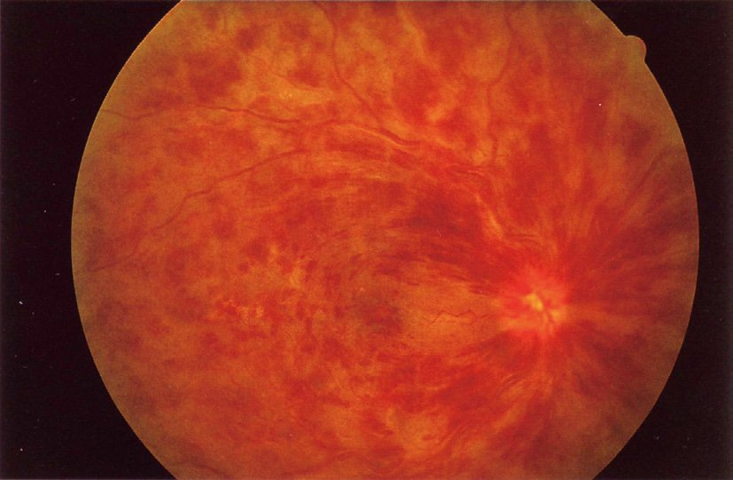
| 三徴 | 危険因子 |
|---|---|
| ① 血流のうっ滞 | 動脈硬化による交叉部/篩状板での圧迫、緑内障（眼圧が高いと篩状板で灌流が悪くなる）、脱水 |
| ② 内皮の障害 | 高血圧・糖尿病・脂質異常症・喫煙、血管炎（Behçet病・サルコイドーシス） |
| ③ 凝固能の亢進 | 抗リン脂質抗体症候群、多血症・骨髄増殖性腫瘍、高ホモシステイン血症、経口避妊薬、脱水、悪性腫瘍 |
| 選択肢 | 解説 |
|---|---|
| ａ 糖尿病 | 糖尿病は網膜静脈閉塞症の代表的な危険因子である——高血糖による内皮障害と血液の粘稠度上昇がVirchowの三徴をそろえる。糖尿病網膜症そのものも併存しうる。 |
| ｂ 高血圧症 | 最も重要な危険因子——動脈硬化した網膜中心動脈が篩状板で静脈を圧迫し、乱流と内皮障害から血栓を形成する。網膜静脈閉塞症患者の過半数に高血圧がある。 |
| ｃ 脂質異常症 | 動脈硬化を進め、血液の粘稠度を上げることで静脈閉塞のリスクを高める。網膜静脈閉塞症の危険因子として高血圧・糖尿病と並んで挙げられる。 |
| ◯ ｄ 骨粗鬆症 | 骨粗鬆症は骨密度が低下して骨折しやすくなる骨代謝の疾患であり、血管の病気ではない——網膜静脈閉塞症の危険因子とは無関係で、これが本問の正解。眼底写真は4象限にわたる火焔状出血・静脈の怒張蛇行を示す網膜中心静脈閉塞症で、危険因子は動脈硬化を進めるもの＝高血圧・糖尿病・脂質異常症・喫煙・緑内障である。 |
| ｅ 動脈硬化症 | 網膜静脈閉塞症の病態そのものである——硬く厚くなった動脈が共通の外膜を介して静脈を圧迫することが閉塞の直接の引き金になる。 |
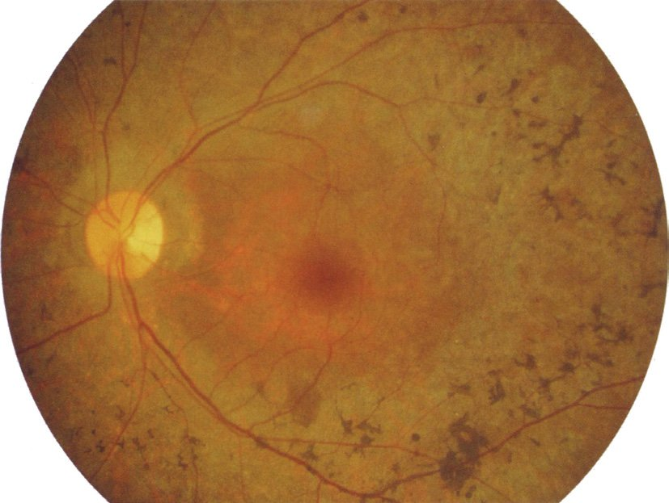
| 時期 | 症状 | 視野 | 視力 |
|---|---|---|---|
| 初期 | 夜盲（暗所で見えにくい） | 正常〜軽度の輪状暗点 | 良好 |
| 中期 | 物にぶつかる・つまずく 羞明・コントラストの低下 | 輪状暗点 → 求心性狭窄 | なお良好 |
| 後期 | 歩行困難・読書困難 | 中心の小さな島のみ | 徐々に低下 |
| 選択肢 | 解説 |
|---|---|
| ａ 中心暗点 | 固視点を含む暗点で、視力が大きく低下する——原因は黄斑疾患（加齢黄斑変性・黄斑円孔）や球後視神経炎。本例は矯正視力1.2が保たれており該当しない。 |
| ｂ 盲点中心暗点 | マリオット盲点と固視点を連ねた形の暗点で、乳頭黄斑線維束が全長にわたって傷むことを示す——中毒性・栄養性視神経症（エタンブトール、メタノール、ビタミンB12欠乏、タバコ・アルコール）やLeber遺伝性視神経症が代表。 |
| ｃ 弓状暗点 | マリオット盲点から弓状に伸びる暗点（Bjerrum暗点）で、乳頭上下極に入る弓状神経線維束の障害を示す——緑内障の典型的な視野障害である。 |
| ◯ ｄ 輪状暗点 | 眼底写真は中間周辺部の骨小体様色素沈着・網膜血管の狭細化・視神経乳頭の蠟様蒼白を示し、両眼性の夜盲と合わせて網膜色素変性と診断できる。杆体密度が最大の中間周辺部（中心から約20〜30°）から視細胞が脱落するため、視野はドーナツ状に抜ける＝輪状暗点になる——やがて輪が内外に広がって求心性視野狭窄に至るが、中心視野（視力）は最後まで残る——本例が矯正1.2である理由でもある。 |
| ｅ らせん状視野 | 検査を続けるうちにイソプターが渦を巻くように狭くなっていく所見で、心因性視覚障害（ヒステリー）に特徴的である。器質的疾患では説明できない形であり、眼底に明らかな異常がある本例には当てはまらない。 |
| 症状 | 部位 | 代表疾患 | 決め手の検査 |
|---|---|---|---|
| 夜盲 | 杆体 | 網膜色素変性／ビタミンA欠乏 | ERG・視野 |
| 飛蚊症・光視症 | 硝子体−網膜界面 | 網膜裂孔・網膜剝離／硝子体出血 | 散瞳眼底（倒像鏡）・超音波B |
| 突然の高度視力低下 | 網膜動脈 | 網膜中心動脈閉塞症 | 眼底（cherry red spot）・全身塞栓源検索 |
| 数日での霧視 | 網膜静脈 | 網膜静脈閉塞症（黄斑浮腫） | 眼底・FA・OCT |
| 無症状（健診） | 網膜毛細血管 | 糖尿病網膜症 | 眼底・FA・OCT/OCTA |
| 眼痛＋充血＋高眼圧 | 虹彩・隅角 | 血管新生緑内障 | 隅角鏡＋原因（眼底/頸動脈）の検索 |
| 白色瞳孔（小児） | 網膜・水晶体 | 網膜芽細胞腫／先天白内障 | 眼底・超音波・CT（石灰化） |